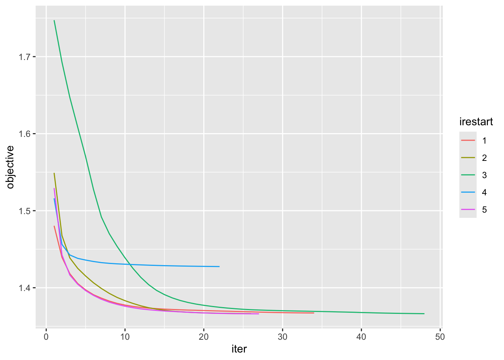
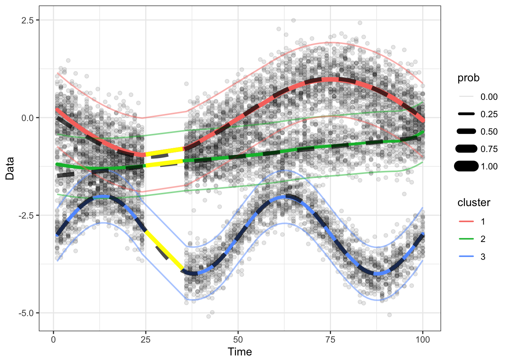
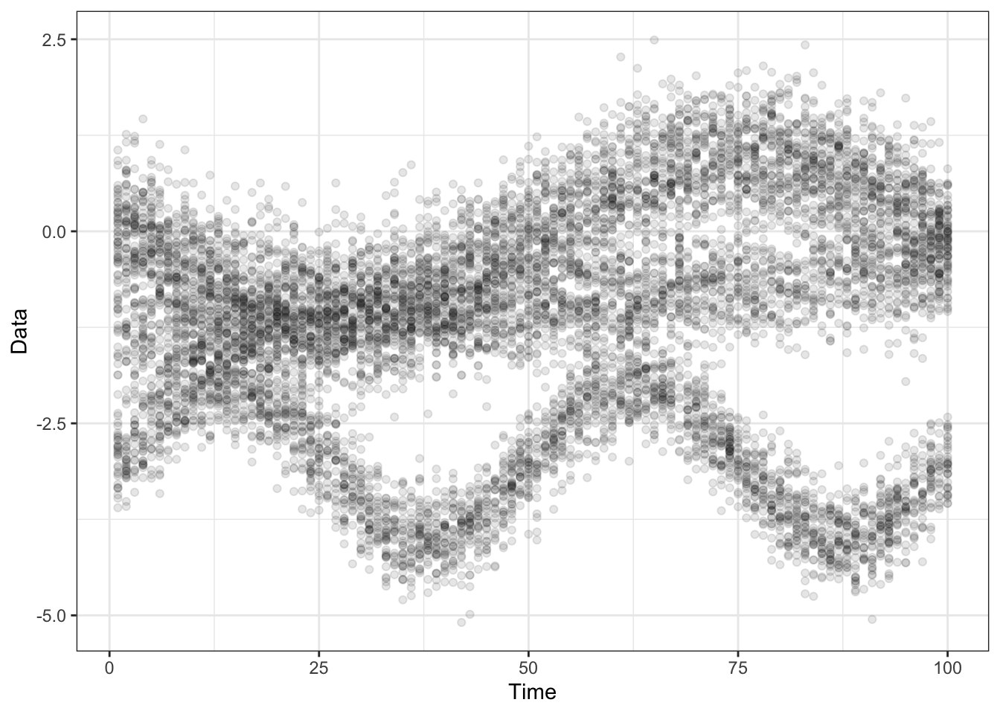
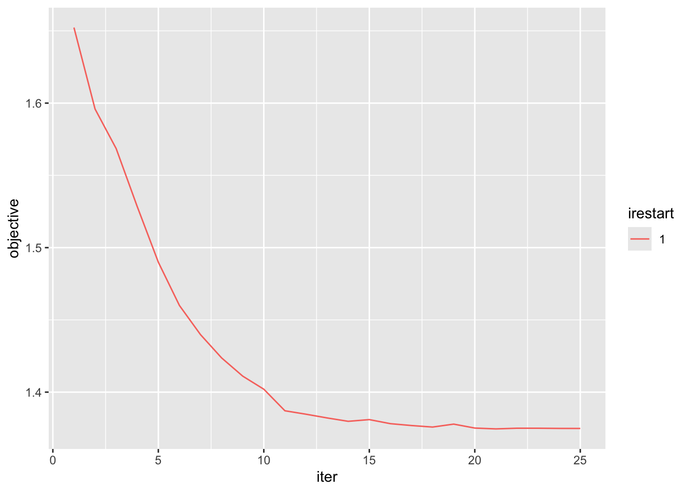
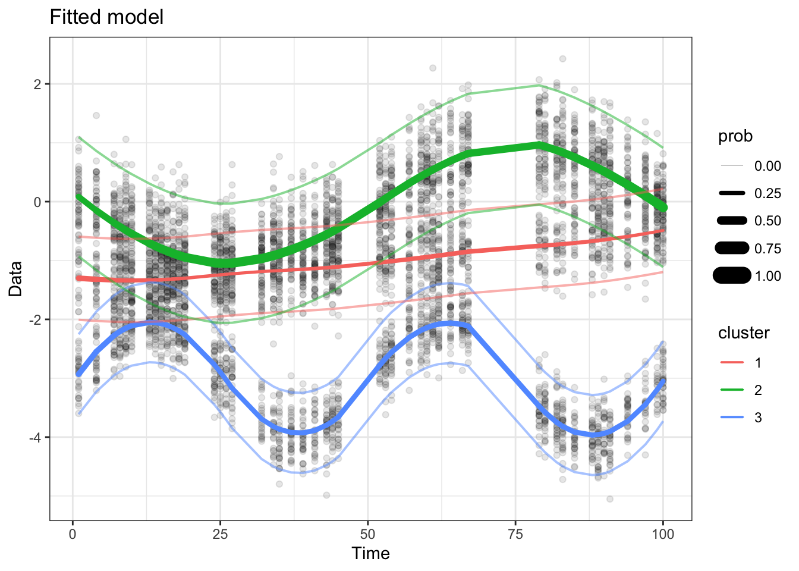
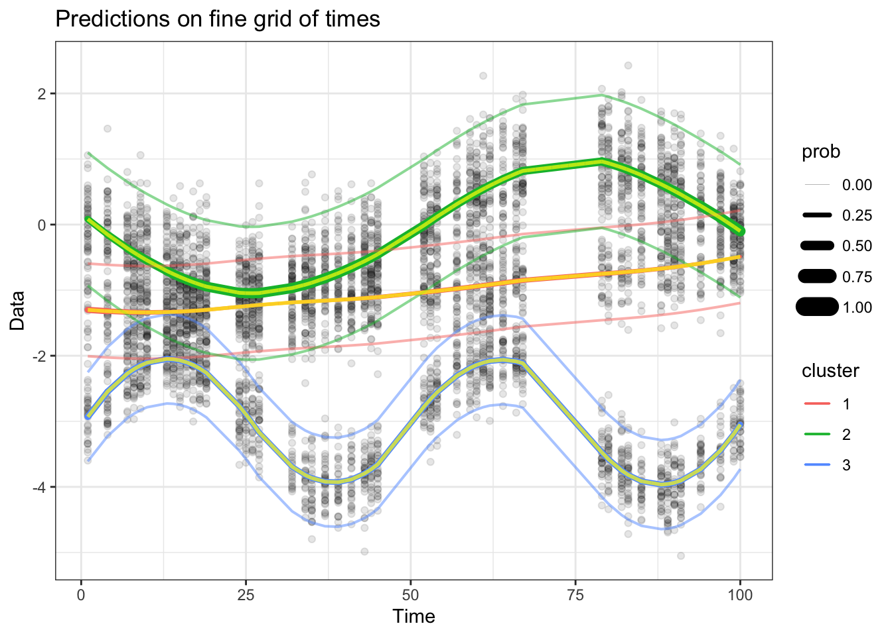
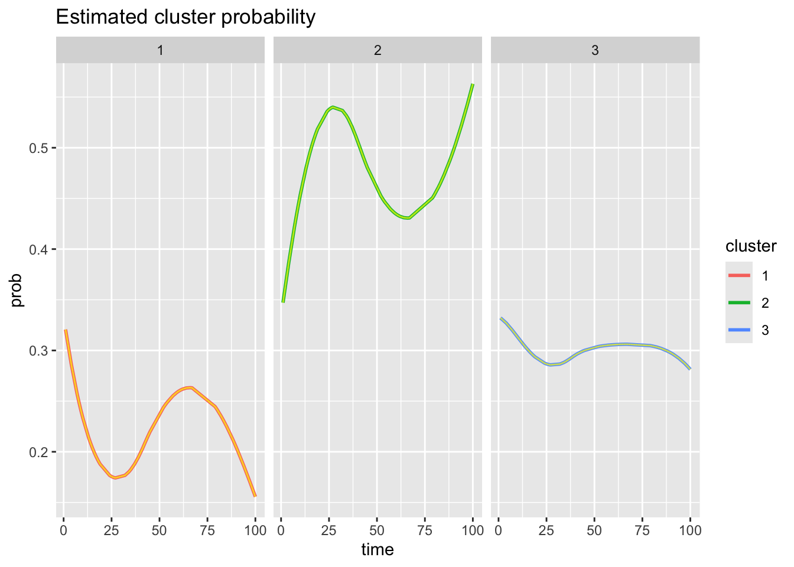
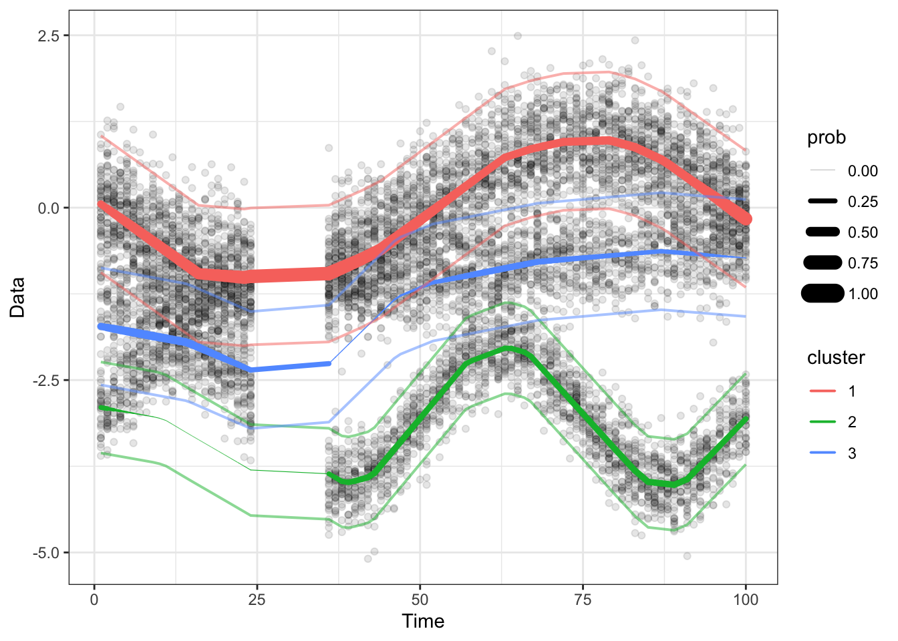
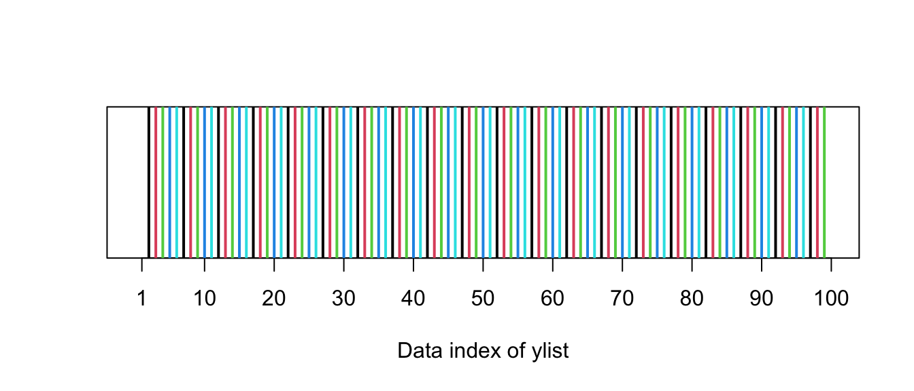

7 Tuning \(\lambda\)
Now that the flowtrend() function has been built (we will test it in the next
section, i.e., 6test.Rmd), we need to build up quite a few functions before
we’re able to cross-validate. These include:
- Predicting out-of-sample, using
predict_flowtrend(). - Evaluating data fit (by likelihood) in an out-of-sample measurement, using
objective(..., unpenalized = TRUE). - Numerically estimating the maximum regularization values to test, using
get_max_lambda(). - Making data splits, using
make_cv_folds().
7.1 Predicting and evaluating on new time points
First, let’s write a couple of functions interpolate_mn() and
interpolate_prob() which linearly interpolate the means and probabilities at
new time points.
#' Do a linear interpolation of the cluster means.
#'
#' @param x Training times.
#' @param tt Prediction time.
#' @param iclust Cluster number.
#' @param mn length(x) by dimdat by numclust matrix.
#'
#' @return A dimdat-length vector.
interpolate_mn <- function(x, tt, iclust, mn){
## Basic checks
stopifnot(length(x) == dim(mn)[1])
stopifnot(iclust <= dim(mn)[3])
if(tt %in% x) return(mn[which(x==tt),,iclust,drop=TRUE])
## Set up for linear interpolation
floor_t <- max(x[which(x <= tt)])
ceiling_t <- min(x[which(x >= tt)])
floor_t_ind <- which(x == floor_t)
ceiling_t_ind <- which(x == ceiling_t)
## Do the linear interpolation
mn_t <-
mn[ceiling_t_ind,,iclust,drop=TRUE]*(tt - floor_t)/(ceiling_t - floor_t) +
mn[floor_t_ind,,iclust,drop=TRUE]*(ceiling_t - tt)/(ceiling_t - floor_t)
## Basic checks
stopifnot(length(mn_t) == dim(mn)[2])
return(mn_t)
}#' Do a linear interpolation of the cluster means.
#'
#' @param x Training times.
#' @param tt Prediction time.
#' @param iclust Cluster number.
#' @param prob length(x) by numclust array or matrix.
#'
#' @return One probability.
interpolate_prob <- function(x, tt, iclust, prob){
## Basic checks
numdat = dim(prob)[1]
numclust = dim(prob)[2]
stopifnot(length(x) == numdat)
stopifnot(iclust <= numclust)
if(tt %in% x) return(prob[which(x == tt),iclust,drop=TRUE])
## Set up for linear interpolation
floor_t <- max(x[which(x <= tt)])
ceiling_t <- min(x[which(x >= tt)])
floor_t_ind <- which(x == floor_t)
ceiling_t_ind <- which(x == ceiling_t)
## Do the linear interpolation
prob_t <-
prob[ceiling_t_ind,iclust,drop=TRUE]*(tt - floor_t)/(ceiling_t - floor_t) +
prob[floor_t_ind,iclust,drop=TRUE]*(ceiling_t - tt)/(ceiling_t - floor_t) # linear interpolation between floor_t and ceiling_t
## Basic checks
stopifnot(length(prob_t) == 1)
stopifnot(0 <= prob_t & prob_t <= 1)
return(prob_t)
}Next, let’s build a prediction function predict_flowtrend() which takes the
model object obj, and the new time points newtimes, and produces.
#' Prediction: Given new timepoints in the original time interval,generate a set
#' of means and probs (and return the same Sigma).
#'
#' @param obj Object returned from covariate EM flowtrend().
#' @param newtimes New times at which to make predictions.
#'
#' @return List containing mean, prob, and sigma, and x.
#'
#' @export
#'
predict_flowtrend <- function(obj, newtimes = NULL){
## Check the dimensions
newx <- newtimes
if(is.null(newtimes)){ newx = obj$x }
## Check if the new times are within the time range of the original data
stopifnot(all(sapply(newx, FUN = function(t) t >= min(obj$x) & t <= max(obj$x))))
## Setup some things
x <- obj$x
TT_new = length(newx)
numclust = obj$numclust
dimdat = obj$dimdat
## Predict the means (manually).
newmn_array = array(NA, dim = c(TT_new, dimdat, numclust))
for(iclust in 1:numclust){
newmn_oneclust <- lapply(newx, function(tt){
interpolate_mn(x, tt, iclust, obj$mn)
}) %>% do.call(rbind, . )
newmn_array[,,iclust] = newmn_oneclust
}
## Predict the probs.
newprob = array(NA, dim = c(TT_new, numclust))
for(iclust in 1:numclust){
newprob_oneclust <- lapply(newx, function(tt){
interpolate_prob(x, tt, iclust, obj$prob)
}) %>% do.call(c, .)
newprob[,iclust] = newprob_oneclust
}
## Basic checks
stopifnot(all(dim(newprob) == c(TT_new,numclust)))
stopifnot(all(newprob >= 0))
stopifnot(all(newprob <= 1))
## Return the predictions
return(list(mn = newmn_array,
prob = newprob,
sigma = obj$sigma,
x = newx))
}Here’s a quick test (no new data) to make sure this function returns a list containing: the mean, probability, covariance, and new times.
testthat::test_that("The prediction function returns the right things", {
## Generate data
set.seed(100)
dt <- gendat_1d(100, rep(100, 100))
ylist = dt %>% dt2ylist()
x = dt %>% pull(time) %>% unique()
obj <- flowtrend(ylist = ylist,
x = x,
maxdev = 5,
numclust = 3,
lambda = 0.02,
l = 1,
l_prob = 2,
lambda_prob = .005, ##
nrestart = 1,
niter = 3)
predobj = predict_flowtrend(obj)
testthat::expect_named(predobj, c("mn", "prob", "sigma", "x"))
})Now, we try to make predictions at new held-out time points held_out=25:35,
from a model that is estimated without those time points.
## Generate data
set.seed(100)
dt <- gendat_1d(100, rep(100, 100))
dt_model <- gendat_1d(100, rep(100, 100), return_model = TRUE)
held_out = 25:35
dt_subset = dt %>% subset(time %ni% held_out)
ylist = dt_subset %>% dt2ylist()
x = dt_subset %>% pull(time) %>% unique()
set.seed(686)
obj <- flowtrend(ylist = ylist,
x = x,
maxdev = 5,
numclust = 3,
l = 2,
l_prob = 2,
lambda = 0.02,
lambda_prob = .1, ##
nrestart = 5,
verbose = TRUE)## EM will restart 5 times
## EM restart: 1
## EM iterations. 1 out of 999 with lapsed time 0 seconds and remaining time 0 seconds and will finish at 2025-07-23 12:34:45 EM iterations. 2 out of 999 with lapsed time 0 seconds and remaining time 0 seconds and will finish at 2025-07-23 12:34:45 EM iterations. 3 out of 999 with lapsed time 1 seconds and remaining time 332 seconds and will finish at 2025-07-23 12:40:17 EM iterations. 4 out of 999 with lapsed time 1 seconds and remaining time 249 seconds and will finish at 2025-07-23 12:38:54 EM iterations. 5 out of 999 with lapsed time 1 seconds and remaining time 199 seconds and will finish at 2025-07-23 12:38:05 EM iterations. 6 out of 999 with lapsed time 1 seconds and remaining time 166 seconds and will finish at 2025-07-23 12:37:32 EM iterations. 7 out of 999 with lapsed time 1 seconds and remaining time 142 seconds and will finish at 2025-07-23 12:37:08 EM iterations. 8 out of 999 with lapsed time 2 seconds and remaining time 248 seconds and will finish at 2025-07-23 12:38:54 EM iterations. 9 out of 999 with lapsed time 2 seconds and remaining time 220 seconds and will finish at 2025-07-23 12:38:26 EM iterations. 10 out of 999 with lapsed time 2 seconds and remaining time 198 seconds and will finish at 2025-07-23 12:38:04 EM iterations. 11 out of 999 with lapsed time 2 seconds and remaining time 180 seconds and will finish at 2025-07-23 12:37:46 EM iterations. 12 out of 999 with lapsed time 2 seconds and remaining time 164 seconds and will finish at 2025-07-23 12:37:31 EM iterations. 13 out of 999 with lapsed time 2 seconds and remaining time 152 seconds and will finish at 2025-07-23 12:37:19 EM iterations. 14 out of 999 with lapsed time 2 seconds and remaining time 141 seconds and will finish at 2025-07-23 12:37:08 EM iterations. 15 out of 999 with lapsed time 2 seconds and remaining time 131 seconds and will finish at 2025-07-23 12:36:58 EM iterations. 16 out of 999 with lapsed time 3 seconds and remaining time 184 seconds and will finish at 2025-07-23 12:37:51 EM iterations. 17 out of 999 with lapsed time 3 seconds and remaining time 173 seconds and will finish at 2025-07-23 12:37:40 EM iterations. 18 out of 999 with lapsed time 3 seconds and remaining time 164 seconds and will finish at 2025-07-23 12:37:32 EM iterations. 19 out of 999 with lapsed time 3 seconds and remaining time 155 seconds and will finish at 2025-07-23 12:37:23 EM iterations. 20 out of 999 with lapsed time 3 seconds and remaining time 147 seconds and will finish at 2025-07-23 12:37:15 EM iterations. 21 out of 999 with lapsed time 3 seconds and remaining time 140 seconds and will finish at 2025-07-23 12:37:08 EM iterations. 22 out of 999 with lapsed time 4 seconds and remaining time 178 seconds and will finish at 2025-07-23 12:37:46 EM iterations. 23 out of 999 with lapsed time 4 seconds and remaining time 170 seconds and will finish at 2025-07-23 12:37:38 EM iterations. 24 out of 999 with lapsed time 4 seconds and remaining time 162 seconds and will finish at 2025-07-23 12:37:31 EM iterations. 25 out of 999 with lapsed time 4 seconds and remaining time 156 seconds and will finish at 2025-07-23 12:37:25 EM iterations. 26 out of 999 with lapsed time 4 seconds and remaining time 150 seconds and will finish at 2025-07-23 12:37:19 EM iterations. 27 out of 999 with lapsed time 5 seconds and remaining time 180 seconds and will finish at 2025-07-23 12:37:49 EM iterations. 28 out of 999 with lapsed time 5 seconds and remaining time 173 seconds and will finish at 2025-07-23 12:37:42 EM iterations. 29 out of 999 with lapsed time 5 seconds and remaining time 167 seconds and will finish at 2025-07-23 12:37:37 EM iterations. 30 out of 999 with lapsed time 5 seconds and remaining time 162 seconds and will finish at 2025-07-23 12:37:32 EM iterations. 31 out of 999 with lapsed time 5 seconds and remaining time 156 seconds and will finish at 2025-07-23 12:37:26 EM iterations. 32 out of 999 with lapsed time 5 seconds and remaining time 151 seconds and will finish at 2025-07-23 12:37:21 EM iterations. 33 out of 999 with lapsed time 6 seconds and remaining time 176 seconds and will finish at 2025-07-23 12:37:46 EM iterations. 34 out of 999 with lapsed time 6 seconds and remaining time 170 seconds and will finish at 2025-07-23 12:37:41
## EM restart: 2
## EM iterations. 1 out of 999 with lapsed time 0 seconds and remaining time 0 seconds and will finish at 2025-07-23 12:34:51 EM iterations. 2 out of 999 with lapsed time 0 seconds and remaining time 0 seconds and will finish at 2025-07-23 12:34:51 EM iterations. 3 out of 999 with lapsed time 0 seconds and remaining time 0 seconds and will finish at 2025-07-23 12:34:51 EM iterations. 4 out of 999 with lapsed time 1 seconds and remaining time 249 seconds and will finish at 2025-07-23 12:39:00 EM iterations. 5 out of 999 with lapsed time 1 seconds and remaining time 199 seconds and will finish at 2025-07-23 12:38:10 EM iterations. 6 out of 999 with lapsed time 1 seconds and remaining time 166 seconds and will finish at 2025-07-23 12:37:38 EM iterations. 7 out of 999 with lapsed time 1 seconds and remaining time 142 seconds and will finish at 2025-07-23 12:37:14 EM iterations. 8 out of 999 with lapsed time 1 seconds and remaining time 124 seconds and will finish at 2025-07-23 12:36:56 EM iterations. 9 out of 999 with lapsed time 1 seconds and remaining time 110 seconds and will finish at 2025-07-23 12:36:42 EM iterations. 10 out of 999 with lapsed time 1 seconds and remaining time 99 seconds and will finish at 2025-07-23 12:36:31 EM iterations. 11 out of 999 with lapsed time 1 seconds and remaining time 90 seconds and will finish at 2025-07-23 12:36:22 EM iterations. 12 out of 999 with lapsed time 2 seconds and remaining time 164 seconds and will finish at 2025-07-23 12:37:36 EM iterations. 13 out of 999 with lapsed time 2 seconds and remaining time 152 seconds and will finish at 2025-07-23 12:37:24 EM iterations. 14 out of 999 with lapsed time 2 seconds and remaining time 141 seconds and will finish at 2025-07-23 12:37:14 EM iterations. 15 out of 999 with lapsed time 2 seconds and remaining time 131 seconds and will finish at 2025-07-23 12:37:04 EM iterations. 16 out of 999 with lapsed time 2 seconds and remaining time 123 seconds and will finish at 2025-07-23 12:36:56 EM iterations. 17 out of 999 with lapsed time 2 seconds and remaining time 116 seconds and will finish at 2025-07-23 12:36:49 EM iterations. 18 out of 999 with lapsed time 2 seconds and remaining time 109 seconds and will finish at 2025-07-23 12:36:42 EM iterations. 19 out of 999 with lapsed time 2 seconds and remaining time 103 seconds and will finish at 2025-07-23 12:36:36 EM iterations. 20 out of 999 with lapsed time 2 seconds and remaining time 98 seconds and will finish at 2025-07-23 12:36:31 EM iterations. 21 out of 999 with lapsed time 2 seconds and remaining time 93 seconds and will finish at 2025-07-23 12:36:26 EM iterations. 22 out of 999 with lapsed time 2 seconds and remaining time 89 seconds and will finish at 2025-07-23 12:36:22 EM iterations. 23 out of 999 with lapsed time 3 seconds and remaining time 127 seconds and will finish at 2025-07-23 12:37:00 EM iterations. 24 out of 999 with lapsed time 3 seconds and remaining time 122 seconds and will finish at 2025-07-23 12:36:55 EM iterations. 25 out of 999 with lapsed time 3 seconds and remaining time 117 seconds and will finish at 2025-07-23 12:36:51 EM iterations. 26 out of 999 with lapsed time 3 seconds and remaining time 112 seconds and will finish at 2025-07-23 12:36:46
## EM restart: 3
## EM iterations. 1 out of 999 with lapsed time 0 seconds and remaining time 0 seconds and will finish at 2025-07-23 12:34:54 EM iterations. 2 out of 999 with lapsed time 0 seconds and remaining time 0 seconds and will finish at 2025-07-23 12:34:54 EM iterations. 3 out of 999 with lapsed time 0 seconds and remaining time 0 seconds and will finish at 2025-07-23 12:34:54 EM iterations. 4 out of 999 with lapsed time 0 seconds and remaining time 0 seconds and will finish at 2025-07-23 12:34:54 EM iterations. 5 out of 999 with lapsed time 1 seconds and remaining time 199 seconds and will finish at 2025-07-23 12:38:13 EM iterations. 6 out of 999 with lapsed time 1 seconds and remaining time 166 seconds and will finish at 2025-07-23 12:37:40 EM iterations. 7 out of 999 with lapsed time 1 seconds and remaining time 142 seconds and will finish at 2025-07-23 12:37:16 EM iterations. 8 out of 999 with lapsed time 1 seconds and remaining time 124 seconds and will finish at 2025-07-23 12:36:59 EM iterations. 9 out of 999 with lapsed time 1 seconds and remaining time 110 seconds and will finish at 2025-07-23 12:36:45 EM iterations. 10 out of 999 with lapsed time 1 seconds and remaining time 99 seconds and will finish at 2025-07-23 12:36:34 EM iterations. 11 out of 999 with lapsed time 1 seconds and remaining time 90 seconds and will finish at 2025-07-23 12:36:25 EM iterations. 12 out of 999 with lapsed time 1 seconds and remaining time 82 seconds and will finish at 2025-07-23 12:36:17 EM iterations. 13 out of 999 with lapsed time 2 seconds and remaining time 152 seconds and will finish at 2025-07-23 12:37:27 EM iterations. 14 out of 999 with lapsed time 2 seconds and remaining time 141 seconds and will finish at 2025-07-23 12:37:16 EM iterations. 15 out of 999 with lapsed time 2 seconds and remaining time 131 seconds and will finish at 2025-07-23 12:37:06 EM iterations. 16 out of 999 with lapsed time 2 seconds and remaining time 123 seconds and will finish at 2025-07-23 12:36:59 EM iterations. 17 out of 999 with lapsed time 2 seconds and remaining time 116 seconds and will finish at 2025-07-23 12:36:52 EM iterations. 18 out of 999 with lapsed time 2 seconds and remaining time 109 seconds and will finish at 2025-07-23 12:36:45 EM iterations. 19 out of 999 with lapsed time 2 seconds and remaining time 103 seconds and will finish at 2025-07-23 12:36:39 EM iterations. 20 out of 999 with lapsed time 3 seconds and remaining time 147 seconds and will finish at 2025-07-23 12:37:23 EM iterations. 21 out of 999 with lapsed time 3 seconds and remaining time 140 seconds and will finish at 2025-07-23 12:37:17 EM iterations. 22 out of 999 with lapsed time 3 seconds and remaining time 133 seconds and will finish at 2025-07-23 12:37:10 EM iterations. 23 out of 999 with lapsed time 3 seconds and remaining time 127 seconds and will finish at 2025-07-23 12:37:04 EM iterations. 24 out of 999 with lapsed time 3 seconds and remaining time 122 seconds and will finish at 2025-07-23 12:36:59 EM iterations. 25 out of 999 with lapsed time 3 seconds and remaining time 117 seconds and will finish at 2025-07-23 12:36:54 EM iterations. 26 out of 999 with lapsed time 4 seconds and remaining time 150 seconds and will finish at 2025-07-23 12:37:27 EM iterations. 27 out of 999 with lapsed time 4 seconds and remaining time 144 seconds and will finish at 2025-07-23 12:37:22 EM iterations. 28 out of 999 with lapsed time 4 seconds and remaining time 139 seconds and will finish at 2025-07-23 12:37:17 EM iterations. 29 out of 999 with lapsed time 4 seconds and remaining time 134 seconds and will finish at 2025-07-23 12:37:12 EM iterations. 30 out of 999 with lapsed time 5 seconds and remaining time 162 seconds and will finish at 2025-07-23 12:37:40 EM iterations. 31 out of 999 with lapsed time 5 seconds and remaining time 156 seconds and will finish at 2025-07-23 12:37:34 EM iterations. 32 out of 999 with lapsed time 5 seconds and remaining time 151 seconds and will finish at 2025-07-23 12:37:30 EM iterations. 33 out of 999 with lapsed time 5 seconds and remaining time 146 seconds and will finish at 2025-07-23 12:37:25 EM iterations. 34 out of 999 with lapsed time 5 seconds and remaining time 142 seconds and will finish at 2025-07-23 12:37:21 EM iterations. 35 out of 999 with lapsed time 6 seconds and remaining time 165 seconds and will finish at 2025-07-23 12:37:44 EM iterations. 36 out of 999 with lapsed time 6 seconds and remaining time 160 seconds and will finish at 2025-07-23 12:37:40 EM iterations. 37 out of 999 with lapsed time 6 seconds and remaining time 156 seconds and will finish at 2025-07-23 12:37:36 EM iterations. 38 out of 999 with lapsed time 6 seconds and remaining time 152 seconds and will finish at 2025-07-23 12:37:32 EM iterations. 39 out of 999 with lapsed time 7 seconds and remaining time 172 seconds and will finish at 2025-07-23 12:37:52 EM iterations. 40 out of 999 with lapsed time 7 seconds and remaining time 168 seconds and will finish at 2025-07-23 12:37:49 EM iterations. 41 out of 999 with lapsed time 7 seconds and remaining time 164 seconds and will finish at 2025-07-23 12:37:45 EM iterations. 42 out of 999 with lapsed time 7 seconds and remaining time 160 seconds and will finish at 2025-07-23 12:37:41 EM iterations. 43 out of 999 with lapsed time 8 seconds and remaining time 178 seconds and will finish at 2025-07-23 12:37:59 EM iterations. 44 out of 999 with lapsed time 8 seconds and remaining time 174 seconds and will finish at 2025-07-23 12:37:56 EM iterations. 45 out of 999 with lapsed time 8 seconds and remaining time 170 seconds and will finish at 2025-07-23 12:37:52 EM iterations. 46 out of 999 with lapsed time 8 seconds and remaining time 166 seconds and will finish at 2025-07-23 12:37:48 EM iterations. 47 out of 999 with lapsed time 9 seconds and remaining time 182 seconds and will finish at 2025-07-23 12:38:04 EM iterations. 48 out of 999 with lapsed time 9 seconds and remaining time 178 seconds and will finish at 2025-07-23 12:38:01
## EM restart: 4
## EM iterations. 1 out of 999 with lapsed time 0 seconds and remaining time 0 seconds and will finish at 2025-07-23 12:35:03 EM iterations. 2 out of 999 with lapsed time 0 seconds and remaining time 0 seconds and will finish at 2025-07-23 12:35:03 EM iterations. 3 out of 999 with lapsed time 0 seconds and remaining time 0 seconds and will finish at 2025-07-23 12:35:03 EM iterations. 4 out of 999 with lapsed time 1 seconds and remaining time 249 seconds and will finish at 2025-07-23 12:39:13 EM iterations. 5 out of 999 with lapsed time 1 seconds and remaining time 199 seconds and will finish at 2025-07-23 12:38:23 EM iterations. 6 out of 999 with lapsed time 1 seconds and remaining time 166 seconds and will finish at 2025-07-23 12:37:50 EM iterations. 7 out of 999 with lapsed time 1 seconds and remaining time 142 seconds and will finish at 2025-07-23 12:37:26 EM iterations. 8 out of 999 with lapsed time 1 seconds and remaining time 124 seconds and will finish at 2025-07-23 12:37:08 EM iterations. 9 out of 999 with lapsed time 1 seconds and remaining time 110 seconds and will finish at 2025-07-23 12:36:54 EM iterations. 10 out of 999 with lapsed time 1 seconds and remaining time 99 seconds and will finish at 2025-07-23 12:36:43 EM iterations. 11 out of 999 with lapsed time 2 seconds and remaining time 180 seconds and will finish at 2025-07-23 12:38:04 EM iterations. 12 out of 999 with lapsed time 2 seconds and remaining time 164 seconds and will finish at 2025-07-23 12:37:49 EM iterations. 13 out of 999 with lapsed time 2 seconds and remaining time 152 seconds and will finish at 2025-07-23 12:37:37 EM iterations. 14 out of 999 with lapsed time 2 seconds and remaining time 141 seconds and will finish at 2025-07-23 12:37:26 EM iterations. 15 out of 999 with lapsed time 2 seconds and remaining time 131 seconds and will finish at 2025-07-23 12:37:16 EM iterations. 16 out of 999 with lapsed time 2 seconds and remaining time 123 seconds and will finish at 2025-07-23 12:37:08 EM iterations. 17 out of 999 with lapsed time 2 seconds and remaining time 116 seconds and will finish at 2025-07-23 12:37:01 EM iterations. 18 out of 999 with lapsed time 2 seconds and remaining time 109 seconds and will finish at 2025-07-23 12:36:54 EM iterations. 19 out of 999 with lapsed time 2 seconds and remaining time 103 seconds and will finish at 2025-07-23 12:36:48 EM iterations. 20 out of 999 with lapsed time 2 seconds and remaining time 98 seconds and will finish at 2025-07-23 12:36:43 EM iterations. 21 out of 999 with lapsed time 2 seconds and remaining time 93 seconds and will finish at 2025-07-23 12:36:38 EM iterations. 22 out of 999 with lapsed time 2 seconds and remaining time 89 seconds and will finish at 2025-07-23 12:36:34
## EM restart: 5
## EM iterations. 1 out of 999 with lapsed time 0 seconds and remaining time 0 seconds and will finish at 2025-07-23 12:35:05 EM iterations. 2 out of 999 with lapsed time 0 seconds and remaining time 0 seconds and will finish at 2025-07-23 12:35:06 EM iterations. 3 out of 999 with lapsed time 0 seconds and remaining time 0 seconds and will finish at 2025-07-23 12:35:06 EM iterations. 4 out of 999 with lapsed time 1 seconds and remaining time 249 seconds and will finish at 2025-07-23 12:39:15 EM iterations. 5 out of 999 with lapsed time 1 seconds and remaining time 199 seconds and will finish at 2025-07-23 12:38:25 EM iterations. 6 out of 999 with lapsed time 1 seconds and remaining time 166 seconds and will finish at 2025-07-23 12:37:52 EM iterations. 7 out of 999 with lapsed time 1 seconds and remaining time 142 seconds and will finish at 2025-07-23 12:37:28 EM iterations. 8 out of 999 with lapsed time 1 seconds and remaining time 124 seconds and will finish at 2025-07-23 12:37:10 EM iterations. 9 out of 999 with lapsed time 1 seconds and remaining time 110 seconds and will finish at 2025-07-23 12:36:57 EM iterations. 10 out of 999 with lapsed time 1 seconds and remaining time 99 seconds and will finish at 2025-07-23 12:36:46 EM iterations. 11 out of 999 with lapsed time 2 seconds and remaining time 180 seconds and will finish at 2025-07-23 12:38:07 EM iterations. 12 out of 999 with lapsed time 2 seconds and remaining time 164 seconds and will finish at 2025-07-23 12:37:51 EM iterations. 13 out of 999 with lapsed time 2 seconds and remaining time 152 seconds and will finish at 2025-07-23 12:37:39 EM iterations. 14 out of 999 with lapsed time 2 seconds and remaining time 141 seconds and will finish at 2025-07-23 12:37:28 EM iterations. 15 out of 999 with lapsed time 2 seconds and remaining time 131 seconds and will finish at 2025-07-23 12:37:18 EM iterations. 16 out of 999 with lapsed time 2 seconds and remaining time 123 seconds and will finish at 2025-07-23 12:37:11 EM iterations. 17 out of 999 with lapsed time 3 seconds and remaining time 173 seconds and will finish at 2025-07-23 12:38:01 EM iterations. 18 out of 999 with lapsed time 5 seconds and remaining time 272 seconds and will finish at 2025-07-23 12:39:42 EM iterations. 19 out of 999 with lapsed time 5 seconds and remaining time 258 seconds and will finish at 2025-07-23 12:39:28 EM iterations. 20 out of 999 with lapsed time 5 seconds and remaining time 245 seconds and will finish at 2025-07-23 12:39:16 EM iterations. 21 out of 999 with lapsed time 5 seconds and remaining time 233 seconds and will finish at 2025-07-23 12:39:04 EM iterations. 22 out of 999 with lapsed time 6 seconds and remaining time 266 seconds and will finish at 2025-07-23 12:39:37 EM iterations. 23 out of 999 with lapsed time 6 seconds and remaining time 255 seconds and will finish at 2025-07-23 12:39:26 EM iterations. 24 out of 999 with lapsed time 6 seconds and remaining time 244 seconds and will finish at 2025-07-23 12:39:15 EM iterations. 25 out of 999 with lapsed time 6 seconds and remaining time 234 seconds and will finish at 2025-07-23 12:39:06 EM iterations. 26 out of 999 with lapsed time 6 seconds and remaining time 225 seconds and will finish at 2025-07-23 12:38:57 EM iterations. 27 out of 999 with lapsed time 7 seconds and remaining time 252 seconds and will finish at 2025-07-23 12:39:24obj$all_objectives %>% mutate(irestart = as.factor(irestart)) %>%
ggplot() + geom_line(aes(x=iter, y=objective, group = irestart, col = irestart))
## Also reorder the cluster labels of the truth, to match the fitted model.
ord = obj$mn[,1,] %>% colSums() %>% order(decreasing=TRUE)
lookup <- setNames(c(1:obj$numclust), ord)
dt_model$cluster = lookup[as.numeric(dt_model$cluster)] %>% as.factor()
## Reorder the cluster labels of the fitted model.
obj = reorder_clust(obj)
testthat::test_that("prediction function returns the right things", {
predobj = predict_flowtrend(obj, newtimes = held_out)
## Check a few things
testthat::expect_equal(predobj$x, held_out)
testthat::expect_equal(rowSums(predobj$prob), rep(1, length(held_out)))
testthat::expect_equal(dim(predobj$mn), c(length(held_out), 1, 3))
})## Test passed 😸Plot the predicted means \(\mu\) and probabilities \(\pi\), with purple points at the interpolated means. We can see that it works as expected.
predobj = predict_flowtrend(obj, newtimes = held_out)
g = plot_1d(ylist = ylist, obj=obj, x = x) +
geom_line(aes(x = time, y = mean, group = cluster),
data = dt_model,## %>% subset(time %ni% held_out),
linetype = "dashed", size=2, alpha = .7)## Warning: The `x` argument of `as_tibble.matrix()` must have unique column names if `.name_repair` is omitted as of tibble 2.0.0.
## ℹ Using compatibility `.name_repair`.
## ℹ The deprecated feature was likely used in the litr package.
## Please report the issue to the authors.
## This warning is displayed once every 8 hours.
## Call `lifecycle::last_lifecycle_warnings()` to see where this warning was generated.## Plot the predicted means
preds = lapply(1:3, function(iclust){
tibble(mn = predobj$mn %>% .[,,iclust, drop = TRUE],
prob = predobj$prob %>% .[,iclust, drop = TRUE],
time = held_out,
cluster = iclust)
}) %>% bind_rows()
g + geom_line(aes(x=time, y=mn, group = cluster), data = preds, col = 'yellow', size = 2)##, alpha = .8) 
The estimated probabilities are shown here, with purple points showing the interpolation. It works as expected.
plot_prob(obj, x=x) +
geom_line(aes(x = time, y = prob, group = cluster, color = cluster),
data = dt_model, linetype = "dashed") +
facet_wrap(~cluster) +
geom_line(aes(x = time, y = prob), data = preds, col = 'yellow', size = 3)Let’s now try to space inputs unevenly, by x.
set.seed(100)
TT = 100
dt <- gendat_1d(TT, rep(100, TT))
dt_model <- gendat_1d(TT, rep(100, TT), return_model = TRUE)
ylist_orig = dt %>% dt2ylist()
plot_1d(ylist_orig)
x = sample(1:TT, floor(TT/2)) %>% sort()
ylist = ylist_orig[x]
set.seed(55)
obj <- flowtrend(ylist = ylist,
x = x,
maxdev = 5,
numclust = 3,
l = 2,
l_prob = 2,
lambda = .5,
lambda_prob = .5, ##
rho_init = .1,
nrestart = 1,
verbose = TRUE)## EM will restart 1 times
## EM restart: 1
## EM iterations. 1 out of 999 with lapsed time 0 seconds and remaining time 0 seconds and will finish at 2025-07-23 12:35:13 EM iterations. 2 out of 999 with lapsed time 0 seconds and remaining time 0 seconds and will finish at 2025-07-23 12:35:13 EM iterations. 3 out of 999 with lapsed time 0 seconds and remaining time 0 seconds and will finish at 2025-07-23 12:35:14 EM iterations. 4 out of 999 with lapsed time 1 seconds and remaining time 249 seconds and will finish at 2025-07-23 12:39:23 EM iterations. 5 out of 999 with lapsed time 1 seconds and remaining time 199 seconds and will finish at 2025-07-23 12:38:33 EM iterations. 6 out of 999 with lapsed time 1 seconds and remaining time 166 seconds and will finish at 2025-07-23 12:38:00 EM iterations. 7 out of 999 with lapsed time 1 seconds and remaining time 142 seconds and will finish at 2025-07-23 12:37:36 EM iterations. 8 out of 999 with lapsed time 1 seconds and remaining time 124 seconds and will finish at 2025-07-23 12:37:19 EM iterations. 9 out of 999 with lapsed time 1 seconds and remaining time 110 seconds and will finish at 2025-07-23 12:37:05 EM iterations. 10 out of 999 with lapsed time 2 seconds and remaining time 198 seconds and will finish at 2025-07-23 12:38:33 EM iterations. 11 out of 999 with lapsed time 2 seconds and remaining time 180 seconds and will finish at 2025-07-23 12:38:15 EM iterations. 12 out of 999 with lapsed time 2 seconds and remaining time 164 seconds and will finish at 2025-07-23 12:37:59 EM iterations. 13 out of 999 with lapsed time 2 seconds and remaining time 152 seconds and will finish at 2025-07-23 12:37:47 EM iterations. 14 out of 999 with lapsed time 2 seconds and remaining time 141 seconds and will finish at 2025-07-23 12:37:36 EM iterations. 15 out of 999 with lapsed time 2 seconds and remaining time 131 seconds and will finish at 2025-07-23 12:37:26 EM iterations. 16 out of 999 with lapsed time 2 seconds and remaining time 123 seconds and will finish at 2025-07-23 12:37:18 EM iterations. 17 out of 999 with lapsed time 2 seconds and remaining time 116 seconds and will finish at 2025-07-23 12:37:12 EM iterations. 18 out of 999 with lapsed time 2 seconds and remaining time 109 seconds and will finish at 2025-07-23 12:37:05 EM iterations. 19 out of 999 with lapsed time 3 seconds and remaining time 155 seconds and will finish at 2025-07-23 12:37:51 EM iterations. 20 out of 999 with lapsed time 3 seconds and remaining time 147 seconds and will finish at 2025-07-23 12:37:43 EM iterations. 21 out of 999 with lapsed time 3 seconds and remaining time 140 seconds and will finish at 2025-07-23 12:37:36 EM iterations. 22 out of 999 with lapsed time 3 seconds and remaining time 133 seconds and will finish at 2025-07-23 12:37:29 EM iterations. 23 out of 999 with lapsed time 3 seconds and remaining time 127 seconds and will finish at 2025-07-23 12:37:23 EM iterations. 24 out of 999 with lapsed time 3 seconds and remaining time 122 seconds and will finish at 2025-07-23 12:37:18 EM iterations. 25 out of 999 with lapsed time 3 seconds and remaining time 117 seconds and will finish at 2025-07-23 12:37:13obj$all_objectives %>% mutate(irestart = as.factor(irestart)) %>%
ggplot() + geom_line(aes(x=iter, y=objective, group = irestart, col = irestart))
## Make mean predictions
newtimes = seq(from=min(x),to=max(x),length=10000)
predobj = predict_flowtrend(obj, newtimes = newtimes)
## Plot the predicted means
preds = lapply(1:3, function(iclust){
tibble(mn = predobj$mn %>% .[,,iclust, drop = TRUE],
prob = predobj$prob %>% .[,iclust, drop = TRUE],
time = newtimes,
cluster = iclust)
}) %>% bind_rows() The estimated means \(\mu\) in the training data are shown as solid triangle points. The out-of-sample \(\mu\) predictions made on a fine grid of time points (shown by the yellow lines) look fine.
g =
plot_1d(ylist=ylist, obj = obj, x = x)
g + ggtitle("Fitted model")
g + geom_line(aes(x=time, y=mn, group = cluster), data = preds, col = 'yellow', size = rel(1), alpha = .7) + ggtitle("Predictions on fine grid of times") 
The out-of-sample \(\pi\) predictions are the lines that connect the points. They look great as well.
plot_prob(obj, x=x) +
## geom_line(aes(x = time, y = prob, group = cluster, color = cluster),
## data = dt_model, linetype = "dashed") +
facet_wrap(~cluster) +
geom_line(aes(x = time, y = prob), data = preds, col = 'yellow', size = rel(.5), alpha = .7)
Next, we’ll try evaluating an estimated model’s prediction in an out-of-sample measurement. This will be measured by the model prediction’s out-of-sample objective (negative log-likelihood).
## Generate data
set.seed(100)
dt <- gendat_1d(100, rep(100, 100))
dt_model <- gendat_1d(100, rep(100, 100), return_model = TRUE)
held_out = 25:35
dt_subset = dt %>% subset(time %ni% held_out)
ylist = dt_subset %>% dt2ylist()
x = dt_subset %>% pull(time) %>% unique()
obj <- flowtrend(ylist = ylist,
x = x,
maxdev = 5,
numclust = 3,
lambda = 0.02,
l = 1,
l_prob = 2,
lambda_prob = .005, ##
nrestart = 5)
## Make prediction
predobj = predict_flowtrend(obj, newtimes = held_out)
## Use the predicted (interpolated) model parameters
obj_pred = objective(mu = predobj$mn, prob = predobj$prob, sigma = predobj$sigma, ylist = ylist[held_out],
unpenalized = TRUE)
truemn = array(NA, dim = dim(predobj$mn))
truemn[,1,] =
dt_model %>% select(time, cluster, mean) %>%
pivot_wider(names_from = cluster, values_from = mean) %>% subset(time %in% held_out) %>%
select(-time) %>% as.matrix()
## Use the true mean
obj_better = objective(mu = truemn, prob = predobj$prob, sigma = predobj$sigma, ylist = ylist[held_out],
unpenalized = TRUE)
## Here is the estimated model
plot_1d(ylist=ylist, obj=obj, x= (1:100)[-held_out])
The out-of-sample prediction is similar for the predicted model and the estimated model. Below, we’re showing just the predicted means at the held-out points, overlaid with data.
(This is measured by the objective (= negative log likelihood), so lower is better! Red is worse than black, naturally.)
{r fit, fig.width = 7, fig.height = 5}) g = plot_1d(ylist = dt %>% subset(time %in% held_out) %>% dt2ylist(), x = held_out) + xlim(c(0,100)) g + geom_line(aes(x=time, y = value, group = name), data = data.frame(truemn[,1,]) %>% add_column(time = held_out) %>% pivot_longer(-time)) + geom_line(aes(x=time, y = value, group = name), data = data.frame(predobj$mn[,1,]) %>% add_column(time = held_out) %>% pivot_longer(-time), col = 'red') + ggtitle(paste0(round(obj_pred,3), " (red, predicted) vs. ", round(obj_better, 3), "(black, truth)"))
7.2 Maximum \((\lambda_\mu, \lambda_\pi)\) values to test
What should the maximum value of regularization parameters to use? It’s useful to be able to calculate the smallest value of regularization parameters that result in fully “simple” \(\mu\) and \(\pi\) over time, in all clusters. Call these \(\lambda_\mu^{\text{max}}\) and \(\lambda_{\pi}^{\text{max}}\). We use these to form a 2d grid of candidate \(\lambda\) values – logarithmically-spaced pairs of values between starting at \((\lambda_{\mu}^{\text{max}}, \lambda_{\pi}^{\text{max}})\) decreasing to some small pair of values.
The function get_max_lambda() numerically estimates this maximum pair
\((\lambda_{\mu}^{\text{max}}, \lambda_{\pi}^{\text{max}})\). It proceeds by first
running flowtrend() on a very large pair \((\lambda_\mu, \lambda_\pi)\), then
sequentially halving both values while checking if the resulting estimated \(\mu\)
and \(\pi\) are all as simple over time.
The simplest, most regularized model of an \(l\)’th order trend filter estimate will be a single \(l\)’th order polynomial; this means that there will be no discontinuities in the \(l-1\)’th order differences.
(For example, a linear trend filter is \(l=1\); the first differences should be piecewise constant, and second differences should be zero except for at the knots. A quadratic trend filter is \(l=2\); the first differences should be piecewise linear, the second differences should be piecewise constant, and the third differences should be zero except for at the knots.)
As soon as they cease to be simple, we stop and take the immediately previous pair of values of \((\lambda_\mu, \lambda_\pi)\).
get_max_lambda() is a wrapper around the workhorse calc_max_lambda(). It
obtains the value and saves it to a maxres_file (which defaults to
maxres.Rdata) in the destin directory.
#' A wrapper for \code{calc_max_lambda}. Saves the two maximum lambda values in
#' a file.
#'
#' @param destin Where to save the output (A two-lengthed list called
#' "maxres").
#' @param maxres_file Filename for output. Defaults to maxres.Rdata.
#' @param ... Additional arguments to \code{flowtrend()}.
#' @inheritParams calc_max_lambda
#'
#' @return No return
#'
#' @export
get_max_lambda <- function(destin, maxres_file = "maxres.Rdata",
ylist,
countslist,
numclust,
maxdev,
max_lambda_mean,
max_lambda_prob,
...){
if(file.exists(file.path(destin, maxres_file))){
load(file.path(destin, maxres_file))
cat("Maximum regularization values are loaded.", fill=TRUE)
return(maxres)
} else {
print(Sys.time())
cat("Maximum regularization values being calculated.", fill = TRUE)
cat("with initial lambda values (prob and mu):", fill = TRUE)
print(c(max_lambda_prob, max_lambda_mean));
maxres = calc_max_lambda(ylist = ylist,
countslist = countslist,
numclust = numclust,
maxdev = maxdev,
## This function's settings
max_lambda_prob = max_lambda_prob,
max_lambda_mean = max_lambda_mean,
...)
print(maxres)
save(maxres, file = file.path(destin, maxres_file))
cat("file was written to ", file.path(destin, maxres_file), fill=TRUE)
cat("maximum regularization value calculation done.", fill = TRUE)
print(Sys.time())
return(maxres)
}
}The aforementioned workhorse calc_max_lambda() is here.
#' Estimate maximum lambda values numerically. First starts with a large
#' initial value \code{max_lambda_mean} and \code{max_lambda_prob}, and runs
#' the EM algorithm on decreasing set of values (sequentially halved). This
#' stops once you see non-simple probabilities or means, and returns the *smallest*
#' regularization (lambda) value pair that gives full sparsity.
#'
#' Note that the \code{zero_stabilize=TRUE} option is used in
#' \code{flowtrend()}, which basically means the EM algorithm runs only until
#' the zero pattern stabilizes.
#'
#' @param ylist List of responses.
#' @param numclust Number of clusters.
#' @param max_lambda_mean Defaults to 4000.
#' @param max_lambda_prob Defaults to 1000.
#' @param iimax Maximum value of x for 2^{-x} factors to try.
#' @param ... Other arguments to \code{flowtrend_once()}.
#'
#' @return list containing the two maximum values to use.
#'
#' @export
calc_max_lambda <- function(ylist, countslist = NULL, numclust,
max_lambda_mean = 4000,
max_lambda_prob = 1000,
verbose = FALSE,
iimax = 16,
...){
## Basic setup: in each dimension, the data should only vary by a relatively
## small amount (say 1/100)
dimdat = ncol(ylist[[1]])
toler_by_dim = sapply(1:dimdat, function(idim){
datrange = ylist %>% sapply(FUN = function(y) y %>% .[,idim] %>% range()) %>% range()
toler = (datrange[2] - datrange[1])/1E3
})
toler_prob = 1E-3
args = list(...)
l = args$l
l_prob = args$l_prob
## Get range of regularization parameters.
facs = sapply(1:iimax, function(ii) 2^(-ii+1)) ## DECREASING order
print("running the models once")
for(ii in 1:iimax){
cat("###############################################################", fill=TRUE)
cat("#### lambda_prob = ", max_lambda_prob * facs[ii],
" and lambda = ", max_lambda_mean * facs[ii], "being tested. ", fill=TRUE)
cat("###############################################################", fill=TRUE)
res = flowtrend_once(ylist = ylist,
countslist = countslist,
numclust = numclust,
lambda_prob = max_lambda_prob * facs[ii],
lambda = max_lambda_mean * facs[ii],
verbose = verbose, ...)
## In each dimension, the data should only vary by a relatively small amount (say 1/100)
mean_is_simple = sapply(1:dimdat, FUN = function(idim){
all(abs(diff(res$mn[,idim,], differences = l+1)) < toler_by_dim[idim] * 2^l) })
prob_is_simple = all(abs(diff(res$prob, differences = l_prob+1)) < toler_prob * 2^l_prob)
all_are_simple = (all(mean_is_simple) & prob_is_simple)
if(!all_are_simple){
## If there are *any* nonzero values at the first iter, prompt a restart
## with higher initial lambda values.
if(ii == 1){
stop(paste0("Max lambdas: ", max_lambda_mean, " and ", max_lambda_prob,
" were too small as maximum reg. values. Go up and try again!!"))
## If there are *any* nonzero values, return the immediately preceding
## lambda values -- these were the smallest values we had found that gives
## full sparsity.
} else {
## Check one more time whether the model was actually zero, by fully running it;
res = flowtrend_once(ylist = ylist,
countslist = countslist,
numclust = numclust,
lambda_prob = max_lambda_prob * facs[ii],
lambda = max_lambda_mean * facs[ii],
...)
## Check if both curves are maximally simple
mean_is_simple = sapply(1:dimdat, FUN = function(idim){
all(abs(diff(res$mn[,idim,], differences = l+1)) < toler_by_dim[idim]) })
prob_is_simple = all(abs(diff(res$prob, differences = l_prob+1)) < toler_prob)
all_are_simple = (all(mean_is_simple) & prob_is_simple)
## If there are *any* nonzero values, stop.
## (Otherwise, just proceed to try a smaller set of lambdas.)
if(!all_are_simple){
return(list(mean = max_lambda_mean * facs[ii-1],
prob = max_lambda_prob * facs[ii-1]))
}
}
}
cat(fill=TRUE)
}
}7.3 Define CV data folds
make_cv_folds() makes the cross-validation “folds”, which are the \(K\)
(nfold) list of data indices. These are not times! They simply split
1:length(ylist).
#' Define the time folds cross-validation.
#'
#' @param ylist Data.
#' @param TT Length of data; if provided, ylist is ignored.
#' @param nfold Number of folds.
#' @param blocksize Defaults to 1. If larger than 1, creates a set of time folds
#' that use contiguous time blocks (by calling
#' \code{make_cv_folds_in_blocks()}).
#' @return List of fold indices.
#' @export
#'
make_cv_folds <- function(ylist = NULL, nfold, TT = NULL, blocksize = 1){
if(blocksize > 1){
return(make_cv_folds_in_blocks(ylist = ylist,
nfold,
TT = TT,
blocksize = blocksize))
}
## Make hour-long index list
if(is.null(TT)) TT = length(ylist)
folds <- rep(1:nfold, ceiling( (TT-2)/nfold))[1:(TT-2)]
inds <- lapply(1:nfold, FUN = function(k) (2:(TT-1))[folds == k])
names(inds) = paste0("Fold", 1:nfold)
return(inds)
} We can visualize how the data is to be split. In the following plot, vertical
lines mark data indices in each fold, using different colors . For nfold = 5,
the first fold is every 5th point starting at 2, \(\{2,7,\dots\}\), and the second
fold is \(\{3,8,\dots\}\), and so forth.
Note: the first index \(1\) and the last \(TT\) are left out at this stage, and
instead made available to all folds at training time (in
cv_flowtrend()). This is because, otherwise, it would be impossible to make
predictions at either ends of the data.
nfold = 5
TT = 100
inds = make_cv_folds(nfold = nfold, TT = TT)
print(inds)## $Fold1
## [1] 2 7 12 17 22 27 32 37 42 47 52 57 62 67 72 77 82 87 92 97
##
## $Fold2
## [1] 3 8 13 18 23 28 33 38 43 48 53 58 63 68 73 78 83 88 93 98
##
## $Fold3
## [1] 4 9 14 19 24 29 34 39 44 49 54 59 64 69 74 79 84 89 94 99
##
## $Fold4
## [1] 5 10 15 20 25 30 35 40 45 50 55 60 65 70 75 80 85 90 95
##
## $Fold5
## [1] 6 11 16 21 26 31 36 41 46 51 56 61 66 71 76 81 86 91 96plot(NA, xlim = c(0,TT), ylim=1:2, ylab = "", xlab = "Data index of ylist", yaxt = "n", xaxt="n")
axis(1, at = c(1, seq(10, 100,10)))
for(ifold in 1:nfold){
abline(v = inds[[ifold]], col = ifold, lwd = 2)
}
This is another function that makes the fold indices but using blocks of time points.
#' Define the "blocked" time folds for cross-validation.
#' This means that contiguous of times will be used to define CV folds.
#'
#' The first fold will be ( 1 2 3 16 17 18 31 32 33 46 47 48 61 62 63 76 77 78
#' 91 92 93), the second fold will be (4 5 6 19 20 21 34 35 36 49 50 51 64 65 66
#' 79 80 81 94 95 96), and so forth.
#'
#' @param nfold Number of folds.
#' @param blocksize Size of block (e.g. 3 will produce the example above).
#' @return List of fold indices.
#' @export
#'
make_cv_folds_in_blocks <- function(ylist=NULL, nfold, TT=NULL, blocksize){
## Make hour-long index list
if(is.null(TT)) TT = length(ylist)
endpoints = round(seq(from = 1, to = TT + blocksize,
by = blocksize))
inds = Map(function(begin, end){
if(begin >= TT-1) return(NULL)
return(seq(begin+1, pmin(end,TT-1)))
}, endpoints[-length(endpoints)], endpoints[-1])
null.elt = sapply(inds, is.null)
if(any(null.elt)){
inds = inds[-which(null.elt)]
}
## Further make these into (e.g. 5) blocks of test indices.
test.ii.list = lapply(1:nfold, function(ifold){
which.test.inds = seq(from = ifold, to = length(inds), by = nfold)
test.ii = unlist(inds[which.test.inds])
return(test.ii)
})
names(test.ii.list) = paste0("Fold", 1:nfold)
## Useful plotting code showing the plots.
if(FALSE){
plot(NA, xlim = c(0,TT), ylim=1:2)
lapply(1:nfold, function(ifold){
a = test.ii.list[[ifold]]; abline(v=a, col=ifold)
})
}
return(test.ii.list)
} 7.4 CV = many single jobs
Next, we build the immediate elements needed for cross-validation.
There are two ways in which flowtrend_once() will be applied to data for
cross-validation; one is when estimating models from held-in data folds, and the
other is when re-estimating models on the full data.
- Estimating models on the held-in data is done by
one_job(). - Re-estimating models on the entire dataset is done by
one_job_refit().
Here is one_job().
#' Helper function to run ONE job for CV, in iprob, imu, ifold, irestart.
#'
#' @param iprob Index for prob.
#' @param imu Index for beta.
#' @param ifold Index for CV folds.
#' @param irestart Index for 1 through nrestart.
#' @param folds CV folds (from \code{make_cv_folds()}).
#' @param destin Destination directory.
#' @param lambda_means List of regularization parameters for mean model.
#' @param lambda_probs List of regularization parameters for prob model.
#' @param ylist Data.
#' @param countslist Counts or biomass.
#' @param ... Rest of arguments for \code{flowtrend_once()}.
#'
#' @return Nothing is returned. Instead, a file named "1-1-1-1-cvscore.Rdata"
#' is saved in \code{destin}. (The indices here are iprob-imu-ifold-irestart).
#'
#' @export
one_job <- function(iprob, imu, ifold, irestart, folds, destin,
lambda_means, lambda_probs,
seedtab = NULL,
x = NULL,
## The rest that is needed explicitly for flowtrend()
ylist, countslist,
l, l_prob,
...){
## Get the train/test data
TT <- length(ylist)
if(is.null(x)) x = 1:TT
test.inds = unlist(folds[ifold]) %>% sort()
test.dat = ylist[test.inds]
test.count = countslist[test.inds]
train.inds = c(1, unlist(folds[-ifold]), TT) %>% sort()
train.dat = ylist[train.inds]
train.count = countslist[train.inds]
## NEW: fit the model on the *time points* in training indices, and
## NEW: test the model on *time points* in the test indices.
## Check whether this job has been done already.
filename = make_cvscore_filename(iprob, imu, ifold, irestart)
best_filename = make_best_cvscore_filename(iprob, imu, ifold)
## if(file.exists(file.path(destin, filename)) ){
if(file.exists(file.path(destin, filename)) | file.exists(file.path(destin, best_filename)) ){
cat(fill=TRUE)
cat(filename, "already done.", fill=TRUE)
return(NULL)
}
## Get the seed ready
if(!is.null(seedtab)){
seed = seedtab %>%
dplyr::filter(iprob == !!iprob &
imu == !!imu &
ifold == !!ifold &
irestart == !!irestart) %>%
dplyr::select(seed1, seed2, seed3, seed4, seed5, seed6, seed7) %>% unlist() %>% as.integer()
} else {
seed = NULL
}
lambda_prob = lambda_probs[iprob]
lambda_mean = lambda_means[imu]
## Run the algorithm (all this trouble because of |nrestart|)
args = list(...)
args$ylist = train.dat
args$countslist = train.count
args$x = x[train.inds] ## NEW
args$lambda = lambda_mean
args$lambda_prob = lambda_prob
args$l = l
args$l_prob = l_prob
args$seed = seed
if("nrestart" %in% names(args)){
args = args[-which(names(args) %in% "nrestart")] ## remove |nrestart| prior to feeding to flowtrend_once().
}
tryCatch({
## Estimate model
argn <- lapply(names(args), as.name)
names(argn) <- names(args)
call <- as.call(c(list(as.name("flowtrend_once")), argn))
res.train = eval(call, args)
## Assign mn and prob
pred = predict_flowtrend(res.train, newtimes = x[test.inds]) ## the x is NEW.
stopifnot(all(pred$prob >= 0))
## Evaluate on test data, by calculating objective (penalized likelihood with penalty parameters set to 0)
cvscore = objective(mu = pred$mn,
prob = pred$prob,
sigma = pred$sigma,
ylist = test.dat,
countslist = test.count,
unpenalized = TRUE)
## Store (temporarily) the run times
time_per_iter = res.train$time_per_iter
final_iter = res.train$final.iter
total_time = res.train$total_time
## Store the results.
mn = res.train$mn
prob = res.train$prob
objectives = res.train$objectives
## Save the CV results
save(cvscore,
## Time
time_per_iter,
final_iter,
total_time,
## Results
lambda_mean,
lambda_prob,
lambda_means,
lambda_probs,
mn,
prob,
objectives,
## Save the file
file = file.path(destin, filename))
return(NULL)
}, error = function(err) {
err$message = paste(err$message,
"\n(No file will be saved for lambdas (",
signif(lambda_probs[iprob],3), ", ", signif(lambda_means[imu],3),
") whose indices are: ",
iprob, "-", imu, "-", ifold, "-", irestart,
" .)",sep="")
cat(err$message, fill=TRUE)
warning(err)})
}Here is one_job_refit().
#' Refit model for one pair of regularization parameter values. Saves to
#' \code{nrestart} files named like "1-4-3-fit.Rdata", for
#' "(iprob)-(imu)-(irestart)-fit.Rdata".
#'
#' (Note, \code{nrestart} is not an input to this function.)
#'
#' @inheritParams one_job
#'
#' @export
one_job_refit <- function(iprob, imu, destin,
lambda_means, lambda_probs,
l, l_prob,
seedtab = NULL,
## The rest that is needed explicitly for flowtrend_once()
ylist, countslist, x,
...){
args = list(...)
nrestart = args$nrestart
assertthat::assert_that(!is.null(nrestart))
for(irestart in 1:nrestart){
## Writing file
filename = make_refit_filename(iprob = iprob, imu = imu, irestart = irestart)
best_filename = make_best_refit_filename(iprob, imu)
## if(file.exists(file.path(destin, filename)) ){
if(file.exists(file.path(destin, filename)) | file.exists(file.path(destin, best_filename))){
cat(filename, "already done.", fill=TRUE)
next
} else {
## Get the seed ready
if(!is.null(seedtab)){
ifold = 0
seed = seedtab %>%
dplyr::filter(iprob == !!iprob,
imu == !!imu,
ifold == !!ifold,
irestart == !!irestart) %>%
dplyr::select(seed1, seed2, seed3, seed4, seed5, seed6, seed7) %>% unlist() %>% as.integer()
} else {
seed = NULL
}
## Get the fitted results on the entire data
args = list(...)
args$ylist = ylist
args$countslist = countslist
args$x = x
args$lambda_prob = lambda_probs[iprob]
args$lambda = lambda_means[imu]
args$l = l
args$l_prob = l_prob
args$seed = seed
if("nrestart" %in% names(args)){
## remove |nrestart| prior to feeding it into flowtrend_once
args = args[-which(names(args) %in% "nrestart")]
}
## Call the function.
argn <- lapply(names(args), as.name)
names(argn) <- names(args)
call <- as.call(c(list(as.name("flowtrend_once")), argn))
res = eval(call, args)
## Save the results
cat("Saving file here:", file.path(destin, filename), fill=TRUE)
save(res, file=file.path(destin, filename))
}
}
}Since cross-validation entails running many jobs, we need to index individual “jobs” carefully. Here are some more helpers for indexing:
make_iimat(): Make a table whose rows index each “job”(iprob, imu, ifold, irestart), to be used byone_job().make_iimat_small(): Make a table whose rows index each(iprob, imu, irestart)for re-estimating models, to be used byone_job_refit().
#' Indices for the cross validation jobs.
#'
#' The resulting iimat looks like this:
#'
#' ind iprob imu ifold irestart
#' 55 6 1 2 1
#' 56 7 1 2 1
#' 57 1 2 2 1
#' 58 2 2 2 1
#' 59 3 2 2 1
#' 60 4 2 2 1
#' @param cv_gridsize CV grid size.
#' @param nfold Number of CV folds.
#' @param nrestart Number of random restarts of EM algorithm.
#'
#' @return Integer matrix.
#'
#' @export
make_iimat <- function(cv_gridsize, nfold, nrestart){
iimat = expand.grid(iprob = 1:cv_gridsize,
imu = 1:cv_gridsize,
ifold = 1:nfold,
irestart = 1:nrestart)
iimat = cbind(ind = as.numeric(rownames(iimat)), iimat)
return(iimat)
}
#' 2d indices for the cross validation jobs.
#'
#' The resulting iimat looks like this:
#' (#, iprob, imu, irestart)
#' 1, 1, 1, 1
#' 2, 1, 2, 1
#' 3, 1, 3, 1
#'
#' @inheritParams make_iimat
#'
#' @return Integer matrix.
#'
#' @export
make_iimat_small <- function(cv_gridsize, nrestart){
iimat = expand.grid(iprob = 1:cv_gridsize,
imu = 1:cv_gridsize,
irestart = 1:nrestart)
iimat = cbind(ind = as.numeric(rownames(iimat)), iimat)
return(iimat)
}Let’s see the integer matrices that these functions make.
make_iimat(cv_gridsize = 5, nfold = 5, nrestart = 10) %>% head()## ind iprob imu ifold irestart
## 1 1 1 1 1 1
## 2 2 2 1 1 1
## 3 3 3 1 1 1
## 4 4 4 1 1 1
## 5 5 5 1 1 1
## 6 6 1 2 1 1make_iimat_small(cv_gridsize = 5, nrestart = 10) %>% head()## ind iprob imu irestart
## 1 1 1 1 1
## 2 2 2 1 1
## 3 3 3 1 1
## 4 4 4 1 1
## 5 5 5 1 1
## 6 6 1 2 1Let’s say you have ten cores to run jobs, perhaps on several different computers
(“nodes”). In order to divide the jobs up into ten chunks, we’ll make function
that splits a matrix iimat into a list of smaller matrices.
#' Helper to divide up the jobs in \code{iimat} into a total of
#' \code{arraynum_max} jobs. The purpose is to divide the jobs, in order to run
#' this on a server.
#'
#' @param arraynum_max Maximum SLURM array number.
#' @param iimat matrix whose rows contain CV job indices.
#'
#' @export
make_iilist <- function(arraynum_max, iimat){
iimax = nrow(iimat)
if(arraynum_max > iimax){
iilist = lapply(1:iimax, function(a)a)
} else {
ends = round(seq(from=0, to=iimax, length=arraynum_max+1))
iilist = Map(function(a,b){ (a+1):b}, ends[-length(ends)], ends[-1])
stopifnot(length(unlist(iilist)) == nrow(iimat))
}
stopifnot(length(unlist(iilist)) == nrow(iimat))
stopifnot(all(sort(unique(unlist(iilist))) == sort(unlist(iilist))))
return(iilist)
}Next, the functions make_cvscore_filename() and make_refit_filename() are
used to form the names of the numerous output files.
#' Create file name (a string) for cross-validation results.
#' @param iprob
#' @param imu
#' @param ifold
#' @param irestart
#'
#' @export
make_cvscore_filename <- function(iprob, imu, ifold, irestart){
filename = paste0(iprob, "-", imu, "-", ifold, "-", irestart, "-cvscore.Rdata")
return(filename)
}
#' Create file name (a string) for cross-validation results.
#' @param iprob
#' @param imu
#' @param ifold
#' @param irestart
#'
#' @export
make_best_cvscore_filename <- function(iprob, imu, ifold){
filename = paste0(iprob, "-", imu, "-", ifold, "-best-cvscore.Rdata")
return(filename)
}
#' Create file name (a string) for re-estimated models for the lambda values
#' indexed by \code{iprob} and \code{imu}.
#' @param iprob
#' @param imu
#' @param irestart
#'
#' @export
make_refit_filename <- function(iprob, imu, irestart){
filename = paste0(iprob, "-", imu, "-", irestart, "-fit.Rdata")
return(filename)
}
#' Create file name (a string) for re-estimated models for the lambda values
#' indexed by \code{iprob} and \code{imu}.
#' @param iprob
#' @param imu
#'
#' @export
make_best_refit_filename <- function(iprob, imu){
filename = paste0(iprob, "-", imu, "-best-fit.Rdata")
return(filename)
}Here’s a useful helper logspace(max, min) to make logarithmically spaced set
of numbers, given min and max. We can use this to make a grid of lambda
pairs to be used for cross-validation.
#' Helper function to logarithmically space out R. \code{length} values linear
#' on the log scale from \code{max} down to \code{min}.
#'
#' @param max Maximum value.
#' @param min Minimum value.
#' @param length Length of the output string.
#' @param min.ratio Factor to multiply to \code{max}.
#'
#' @return Log spaced
#'
#' @export
logspace <- function(max, min=NULL, length, min.ratio = 1E-4){
if(is.null(min)) min = max * min.ratio
vec = 10^seq(log10(min), log10(max), length = length)
stopifnot(abs(vec[length(vec)] - max) < 1E10)
return(vec)
}7.5 Running cross-validation
Putting the helpers all together, you get the main user-facing function
cv_flowtrend().
#' Cross-validation for flowtrend(). Saves results to separate files in
#' \code{destin}.
#'
#' @param destin Directory where output files are saved.
#' @param nfold Number of cross-validation folds. Defaults to 5.
#' @param nrestart Number of repetitions.
#' @param save_meta If TRUE, save meta data.
#' @param lambda_means Regularization parameters for means.
#' @param lambda_probs Regularization parameters for probs.
#' @param folds Manually provide CV folds (list of time points of data to use
#' as CV folds). Defaults to NULL.
#' @param mc.cores Use this many CPU cores.
#' @param blocksize Contiguous time blocks from which to form CV time folds.
#' @param refit If TRUE, estimate the model on the full data, for each pair of
#' regularization parameters.
#' @param ... Additional arguments to flowtrend().
#' @inheritParams flowtrend_once
#'
#' @return No return.
#'
#' @export
cv_flowtrend <- function(## Data
ylist,
countslist,
x = NULL, ## THIS IS NEW
## Define the locations to save the CV.
destin = ".",
## Regularization parameter values
lambda_means,
lambda_probs,
l,
l_prob,
iimat = NULL,
## Other settings
maxdev,
numclust,
nfold,
blocksize,
nrestart,
verbose = FALSE,
refit = FALSE,
save_meta = FALSE,
mc.cores = 1,
folds = NULL,
seedtab = NULL,
niter = 1000,
...){
## Basic checks
stopifnot(length(lambda_probs) == length(lambda_means))
cv_gridsize = length(lambda_means)
## There's an option to input one's own iimat matrix.
if(is.null(iimat)){
## Make an index of all jobs
if(!refit) iimat = make_iimat(cv_gridsize, nfold, nrestart)
if(refit) iimat = make_iimat_small(cv_gridsize, nrestart)
}
## Define the CV folds
## folds = make_cv_folds(ylist = ylist, nfold = nfold, blocksize = 1)
if(is.null(folds)){
folds = make_cv_folds(ylist = ylist, nfold = nfold, blocksize = blocksize)
} else {
stopifnot(length(folds) == nfold)
}
## Save meta information, once.
if(save_meta){
##if(!refit){
if(file.exists(file = file.path(destin, 'meta.Rdata'))){
## Put aside the current guys
cat(fill = TRUE)
cat("Meta data already exists!")
folds_current = folds
nfold_current = nfold
nrestart_current = nrestart
cv_gridsize_current = cv_gridsize
lambda_means_current = lambda_means
lambda_probs_current = lambda_probs
ylist_current = ylist
x_current = x
countslist_current = countslist
## Load the saved metadata and check if they are all the same as the current guys
load(file = file.path(destin, 'meta.Rdata'), verbose = FALSE)
stopifnot(identical(folds, folds_current))
stopifnot(nfold == nfold_current)
stopifnot(nrestart == nrestart_current) ## Added recently
stopifnot(cv_gridsize == cv_gridsize_current)
stopifnot(all(lambda_means == lambda_means_current))
stopifnot(all(lambda_probs == lambda_probs_current))
stopifnot(identical(ylist, ylist_current))
stopifnot(identical(x, x_current))
stopifnot(identical(countslist, countslist_current))
cat(fill=TRUE)
cat("Successfully checked that the saved metadata is identical to the current one.", fill = TRUE)
} else {
save(folds,
nfold,
nrestart, ## Added recently
cv_gridsize,
lambda_means,
lambda_probs,
ylist, countslist,
x,
## Save the file
file = file.path(destin, 'meta.Rdata'))
print(paste0("wrote meta data to ", file.path(destin, 'meta.Rdata')))
}
## }
}
## Run the EM algorithm many times, for each value of (iprob, imu, ifold, irestart)
start.time = Sys.time()
parallel::mclapply(1:nrow(iimat), function(ii){
print_progress(ii, nrow(iimat), "Jobs (EM replicates) assigned on this computer", start.time = start.time)
if(!refit){
iprob = iimat[ii,"iprob"]
imu = iimat[ii,"imu"]
ifold = iimat[ii,"ifold"]
irestart = iimat[ii,"irestart"]
## if(verbose) cat('(iprob, imu, ifold, irestart)=', c(iprob, imu, ifold, irestart), fill=TRUE)
} else {
iprob = iimat[ii, "iprob"]
imu = iimat[ii, "imu"]
ifold = 0
}
if(!refit){
one_job(iprob = iprob,
imu = imu,
l = l,
l_prob = l_prob,
ifold = ifold,
irestart = irestart,
folds = folds,
destin = destin,
lambda_means = lambda_means,
lambda_probs = lambda_probs,
## Arguments for flowtrend()
ylist = ylist, countslist = countslist,
x = x,
## Additional arguments for flowtrend().
numclust = numclust,
maxdev = maxdev,
verbose = FALSE,
seedtab = seedtab,
niter = niter)
} else {
one_job_refit(iprob = iprob,
imu = imu,
l = l,
l_prob = l_prob,
destin = destin,
lambda_means = lambda_means,
lambda_probs = lambda_probs,
## Arguments to flowtrend()
ylist = ylist, countslist = countslist,
x = x,
## Additional arguments for flowtrend().
numclust = numclust,
maxdev = maxdev,
nrestart = nrestart,
verbose = FALSE,
seedtab = seedtab,
niter = niter)
}
return(NULL)
}, mc.cores = mc.cores)
}7.6 Summarizing the output
Once the cross-validation is finished (and saved into many files called e.g.
1-1-1-1-cvscore.Rdata or 1-1-1-fit.Rdata), we can use cv_summary() to
summarize the results.
If you look closely, you’ll notice that cv_aggregate() is the workhorse.
#' Main function for summarizing the cross-validation results.
#'
#' @inheritParams cv_flowtrend
#' @param save If TRUE, save to \code{file.path(destin, filename)}.
#' @param filename File name to save to.
#'
#' @return List containing summarized results from cross-validation. Here are
#' some objects in this list: \code{bestres} is the the overall best model
#' chosen from the cross-validation; \code{cvscoremat} is a 2d matrix of CV
#' scores from all pairs of regularization parameters; \code{bestreslist} is a
#' list of all the best models (out of \code{nrestart} EM replications) from the
#' each pair of lambda values. If \code{isTRUE(save)}, nothing is returned.
#'
#' @export
cv_summary <- function(destin = ".",
save = FALSE,
filename = "summary.RDS"){
load(file.path(destin,'meta.Rdata'))
## This loads all the necessary things: nrestart, nfold, cv_gridsize
stopifnot(exists("nrestart"))
stopifnot(exists("nfold"))
stopifnot(exists("cv_gridsize"))
## Get the results of the cross-validation.
a = cv_aggregate(destin)
cvscore.mat = a$cvscore.mat
cvscore.mat.se = a$cvscore.mat.se
min.inds = a$min.inds
min.inds.1se = a$min.inds.1se
## Get results from refitting
bestreslist = cv_aggregate_res(destin = destin)
bestres = bestreslist[[paste0(min.inds[1] , "-", min.inds[2])]]
if(is.null(bestres)){
if(min.inds[1]==2 & min.inds[2]==3) browser()
stop(paste0("The model with lambda indices (",
min.inds[1], ",", min.inds[2], ") is not available."))
}
out = list(bestres = bestres,
cvscore.mat = cvscore.mat,
cvscore.mat.se = cvscore.mat.se,
min.inds = min.inds,
min.inds.1se = min.inds.1se,
lambda_means = lambda_means,
lambda_probs = lambda_probs,
## List of all best models for all lambda pairs.
bestreslist = bestreslist,
destin = destin)
if(save){
saveRDS(out, file=file.path(destin, filename))
}
return(out)
}Because the metadata (meta.Rdata) file is a list object, and you want to
prevent loading it to your function environment (lest it overwrite existing
variables), we write a short helper function to load it.
##' Load contents from the Rdata file |filename| and return a list.
##' This is specifically for when the Rddata file you load contains a /named/ R
##' list.
##'
##' This is basically trying to treat the Rdata file more like an RDS file that contains a list.
##'
##' @param filename Name of the Rdata file
##'
##' @return List object with contents of the Rdata file.
##' @export
load_Rdata <- function(filename){
## loads an RData file, and returns it
load(filename, new_env <- new.env())
obj = lapply(ls(envir = new_env), get)
names(obj) = ls(new_env)
return(obj)
}#' From the results saved in \code{destin}, aggregate all |nrestart| files to retain only the "best" restart, and delete the rest.
#'
#' All meta information (|nfold|, |cv_gridsize|, |nrestart|, |lambda_means|, |lambda_probs|) comes from \code{meta.Rdata}.
#'
#' @param destin Directory with cross-validation output.
#'
#' @export
cv_makebest <- function(destin){
## Read the meta data (for |nfold|, |cv_gridsize|, |nrestart|, |lambda_means|, |lambda_probs|)
load(file = file.path(destin, 'meta.Rdata'), verbose = FALSE)
## This loads all the necessary things; just double-checking.
stopifnot(exists("nrestart"))
stopifnot(exists("nfold"))
stopifnot(exists("cv_gridsize"))
stopifnot(exists(c("lambda_probs")))
stopifnot(exists(c("lambda_means")))
## Aggregate the results
cvscore.array = array(NA, dim = c(cv_gridsize, cv_gridsize, nfold, nrestart))
cvscore.mat = matrix(NA, nrow = cv_gridsize, ncol = cv_gridsize)
for(iprob in 1:cv_gridsize){
for(imu in 1:cv_gridsize){
for(ifold in 1:nfold){
print(c(iprob, imu, ifold))
## If the "best" flowtrend object has already been created, do nothing.
best_filename = make_best_cvscore_filename(iprob, imu, ifold)
if(file.exists(file.path(destin, best_filename))){
next
## Otherwise, attempt to load from all |nrestart| replicates
} else {
objectives = load_all_objectives(destin, iprob, imu, ifold, nrestart)
## If all |nrestart| files exist, delete all files but the best model.
if(all(!is.na(objectives))){
best_irestart = which(objectives == min(objectives)) %>% .[1] ## If there is a tie, leave it.
keep_only_best(destin, iprob, imu, ifold, nrestart, best_irestart)
}
else {
print(paste0("iprob=", iprob, " imu=", imu, " ifold=", ifold, " had objectives: ", objectives))
}
}
}
}
}
## Also go over the "refit" files
for(iprob in 1:cv_gridsize){
for(imu in 1:cv_gridsize){
## If the "best" flowtrend object has already been created, do nothing.
best_filename = make_best_refit_filename(iprob, imu)
if(file.exists(file.path(destin, best_filename))){
## ## Check if any more jobs have been done since before
## objectives = load_all_refit_objectives(destin, iprob, imu, nrestart)
## if(any(!is.na(objectives))){
## nonmissing_irestart = which(!is.na(objectives))## == min(objectives))
## ## keep_only_best_refit(destin, iprob, imu, nrestart, best_irestart)
## load(file.path(destin, best_filename))
## } else {
## print(paste0("iprob=", iprob, " imu=", imu, " had /refit/ objectives: ", objectives))
## }
## }
next
## Otherwise, attempt to load from all |nrestart| replicates
} else {
objectives = load_all_refit_objectives(destin, iprob, imu, nrestart)
if(all(!is.na(objectives))){
best_irestart = which(objectives == min(objectives)) %>% .[1] ## If there is a tie, leave it.
keep_only_best_refit(destin, iprob, imu, nrestart, best_irestart)
} else {
print(paste0("iprob=", iprob, " imu=", imu, " had /refit/ objectives: ", objectives))
}
}
}
}
}
#' Loading all objectives, with NA's for missing files
load_all_objectives <- function(destin, iprob, imu, ifold, nrestart){
objectives = sapply(1:nrestart, function(irestart){
filename = make_cvscore_filename(iprob, imu, ifold, irestart)
tryCatch({
load(file.path(destin, filename), verbose = FALSE)
return(objectives[length(objectives)])
}, error = function(e){ NA })
})
return(objectives)
}
#' Loading all objectives, with NA's for missing files
load_all_refit_objectives <- function(destin, iprob, imu, nrestart){
objectives = sapply(1:nrestart, function(irestart){
filename = make_refit_filename(iprob, imu, irestart)
## filename = make_best_cvscore_filename(iprob, imu, ifold)
tryCatch({
load(file.path(destin, filename), verbose = FALSE)
return(res$objectives[length(res$objectives)])
}, error = function(e){ NA })
})
return(objectives)
}
#' Keeping only the output files for the "best" restart, and deleting the rest.
keep_only_best <- function(destin, iprob, imu, ifold, nrestart, best_irestart){
for(irestart in 1:nrestart){
filename = make_cvscore_filename(iprob, imu, ifold, irestart)
if(irestart == best_irestart){
best_filename = make_best_cvscore_filename(iprob, imu, ifold)
file.rename(from = file.path(destin, filename),
to = file.path(destin, best_filename))
} else {
file.remove(file.path(destin, filename))
}
}
}
#' Keeping only the output files (among refit models) for the "best" restart,
#' and deleting the rest.
keep_only_best_refit <- function(destin, iprob, imu, nrestart, best_irestart){
for(irestart in 1:nrestart){
filename = make_refit_filename(iprob, imu, irestart)
if(irestart == best_irestart){
best_filename = make_best_refit_filename(iprob, imu)
file.rename(from = file.path(destin, filename),
to = file.path(destin, best_filename))
} else {
file.remove(file.path(destin, filename))
}
}
}#' Aggregate CV scores from the results, saved in \code{destin}.
#'
#' @param destin Directory with cross-validation output.
#'
#' @export
cv_aggregate <- function(destin){
## ## Read the meta data (for |nfold|, |cv_gridsize|, |nrestart|, |lambda_means|,
## ## |lambda_probs|)
load(file = file.path(destin, 'meta.Rdata'), verbose = FALSE)
## This loads all the necessary things; just double-checking.
stopifnot(exists("nrestart"))
stopifnot(exists("nfold"))
stopifnot(exists("cv_gridsize"))
stopifnot(exists(c("lambda_probs")))
stopifnot(exists(c("lambda_means")))
## Aggregate the results
cvscore.array = array(NA, dim = c(cv_gridsize, cv_gridsize, nfold, nrestart))
cvscore.mat = matrix(NA, nrow = cv_gridsize, ncol = cv_gridsize)
cvscore.mat.se = matrix(NA, nrow = cv_gridsize, ncol = cv_gridsize)
for(iprob in 1:cv_gridsize){
for(imu in 1:cv_gridsize){
obj = matrix(NA, nrow=nfold, ncol=nrestart)
for(ifold in 1:nfold){
## If the "best" flowtrend object has already been created, use it.
best_filename = make_best_cvscore_filename(iprob, imu, ifold)
if(file.exists(file.path(destin, best_filename))){
load(file.path(destin, best_filename), verbose = FALSE)
cvscore.array[iprob, imu, ifold, 1] = cvscore
obj[ifold, 1] = objectives[length(objectives)]
## Otherwise, aggregate directly from the individual files
} else {
for(irestart in 1:nrestart){
filename = make_cvscore_filename(iprob, imu, ifold, irestart)
tryCatch({
load(file.path(destin, filename), verbose = FALSE)
cvscore.array[iprob, imu, ifold, irestart] = cvscore
obj[ifold, irestart] = objectives[length(objectives)]
}, error = function(e){})
}
}
}
## Pick out the CV scores with the *best* (lowest) objective value
cvscores = cvscore.array[iprob, imu , , ] ## nfold x nrestart
best.models = apply(obj, 1, function(myrow){
ind = which(myrow == min(myrow, na.rm=TRUE))
if(length(ind)>1) ind = ind[1] ## Just choose one, if there is a tie.
return(ind)
}) %>% as.numeric()
## best.models is the *best* model out of nrestarts, for each fold.
## final.cvscores[ifold,] has the |nrestart| final cv scores for that fold.
## cvscores[ifold, best.models[ifold]] is the best CV score for that fold.
final.cvscores = sapply(1:nfold, function(ifold){
cvscores[ifold, best.models[ifold]] ## Why did we get rid of this?
## cvscores[ifold]
})
cvscore.mat[iprob, imu] = mean(final.cvscores)
cvscore.mat.se[iprob, imu] = sd(final.cvscores)
}
}
## Clean a bit
cvscore.mat[which(is.nan(cvscore.mat), arr.ind = TRUE)] = NA
## ## Read the meta data (for |nfold|, |cv_gridsize|, |nrestart|)
rownames(cvscore.mat) = signif(lambda_probs,3)
colnames(cvscore.mat) = signif(lambda_means,3)
## Find the minimum
mat = cvscore.mat
min.inds = which(mat == min(mat, na.rm = TRUE), arr.ind = TRUE)
## Find the 1SE minimum index too
mat = cvscore.mat
## sdmat = (out$cvscore.mat) ## This is fake
## sdmat[] = sd(out$cvscore.mat) ## This is fake
sdmat = cvscore.mat.se ## This is fake
upper = mat[min.inds] + sdmat[min.inds]
possible_inds = which(mat < upper, arr.ind=TRUE)
## ## Because there is no good heuristic, we'll just go up in both directions.
## my_ord = order(abs(possible_inds[,2] - possible_inds[,1]))
## possible_inds[my_ord, ] %>% apply(2, which.max)
## Or even just stick with the ones on the diagonal direction.
myrows = which(possible_inds[,2] == possible_inds[,1])
possible_inds = possible_inds[myrows, ,drop=FALSE]
min.inds.1se = possible_inds[which.max(possible_inds[,1]),]
## Return the results
out = list(cvscore.array = cvscore.array,
cvscore.mat = cvscore.mat,
cvscore.mat.se = cvscore.mat.se,
lambda_means = lambda_means,
lambda_probs = lambda_probs,
min.inds = min.inds,
min.inds.1se = min.inds.1se)
return(out)
}#' Helper to aggregate CV results and obtain the |res| object, all saved in
#' |destin|.
#'
#' @inheritParams cv_aggregate
#'
#' @return List containing, for every (iprob, imu), the "best" estimated model
#' out of the |nrestart| replicates (best in the sense that it had the best
#' likelihood value out of the |nrestart| replicates.)
cv_aggregate_res <- function(destin){
load(file.path(destin, "meta.Rdata"))
res.list = list()
for(iprob in 1:cv_gridsize){
for(imu in 1:cv_gridsize){
## If the "best" object has already been created, use it.
best_refit_filename = make_best_refit_filename(iprob, imu)
if(file.exists(file.path(destin, best_refit_filename))){
load(file.path(destin, best_refit_filename), verbose = FALSE)
bestres = res
## Otherwise, aggregate directly from the individual files
} else {
obj = rep(NA, nrestart)
res.list.inner = list()
for(irestart in 1:nrestart){
filename = make_refit_filename(iprob, imu, irestart)
tryCatch({
load(file.path(destin, filename))
res.list.inner[[irestart]] = res
obj[irestart] = res$objectives[length(res$objectives)]
}, error = function(e){ NULL })
}
if(!all(is.na(obj))){
bestres = res.list.inner[[which.min(obj)]] ## which.min?
}
}
## Add the "best" object to a list.
res.list[[paste0(iprob, "-", imu)]] = bestres
}
}
return(res.list)
}7.7 CV on your own computer
Using all this functionality, we’d like to be able to cross-validate on our own
laptop, using cv_flowtrend().
Let’s try it out.
(Note: We’re not running this code while building the package because it requires saving some output to an offline directory.)
cv_gridsize = 3
l = 1
l_prob = 1
set.seed(332)
ylist = gendat_1d(10, rep(100,10)) %>% dt2ylist()
plot_1d(ylist)
folds = make_cv_folds(lapply(1:100, function(ii) cbind(runif(10))), nfold = 3, TT = length(ylist)) ## What is this doing? FISHY
lambda_means = lambda_probs = logspace(min = 1E-5, max = 1, length = cv_gridsize)
destin = "~/repos/flowtrend/inst/test-output/cv-offline"
dir.create(destin, recursive=TRUE)A realistic application would start with a call to get_max_lambda():
## This is where all the output is
destin = "~/repos/flowtrend/inst/test-output/cv-offline"
## Get the maximum lambda values
get_max_lambda(destin = destin,
maxres_file = "maxres.Rdata",
ylist,
countslist = NULL,
numclust = 3,
maxdev = 1,
max_lambda_prob = 3000000,
max_lambda_mean = 3000000,
verbose = TRUE,
l = 1, l_prob = 1)Next, with this maxres object, run the cross-validation.
## Loads "maxres" object
load(file.path(destin, "maxres.Rdata"), verbose = TRUE)
## Run the cross-validation
lambda_means = logspace(max = maxres$mean, length = 5)
lambda_probs = logspace(max = maxres$prob, length = 5)
for(refit in c(FALSE, TRUE)){
cv_flowtrend(ylist = ylist,
countslist = NULL,
destin = destin,
lambda_means = lambda_means,
lambda_probs = lambda_probs,
l = 2,
l_prob = 1,
maxdev = 2,
numclust = 3,
nfold = 3,
folds = folds,
nrestart = 3,
verbose = TRUE,
refit = refit,
save_meta = TRUE,
blocksize = 1,
mc.cores = 6)
}
cvres = cv_summary(destin = destin, save=TRUE)
## Plot the result
oneplot = plot_1d(ylist = ylist) %>% plot_1d_add_model(obj = cvres$bestres, idim=1, plot_band = TRUE) +
geom_line(aes(x=time, y=mean, group = cluster),
data = gendat_1d(10, ntlist = rep(100, 10), return_model = TRUE), linetype = 'dashed')
oneplot %>% ggsave(filename = file.path(destin, "..", "..", "cv-offline-test.png"), width = 5, height = 3)
(The dashed black lines are the truth, and the solid colored lines are the estimated means.)
7.8 CV produces too many files? No problem
Once all jobs are run, you can use cv_makebest() which goes over all the
output, and (1) retains the best model out of the 3 replicates (random
restarts), and (2) deletes the output from the remaining 2 of the 3
replicates. cv_summary() still works fine with the reduced number of files.
## This is where all the output is
destin = "~/repos/flowtrend/inst/test-output/cv-offline"
## There are a lot of individual files here.
list.files(destin) %>% length() %>% print()
## Clean the output directory to keep only the "best" results
cv_makebest(destin = destin)
## There are much fewer individual files here.
list.files(destin) %>% length() %>% print()7.9 CV for unevenly spaced data
Next, we test whether cv_flowtrend works for unevenly spaced points.
(Note: We’re not running this code while building the package because it requires saving some output to an offline directory.)
## Setup
l = 1
l_prob = 1
destin = "inst/test-output/uneven-test"
dir.create(destin, recursive = TRUE)
## Generate data, and subset it at unevenly spaced x values.
set.seed(332)
TT = 50
nt = 100
ylist = gendat_1d(TT, ntlist = rep(nt, TT)) %>% dt2ylist()
x = sample(1:TT, size=TT/2, replace = FALSE) %>% sort()
ylist = ylist[x]
## Save the data
datobj = list(ylist = ylist, x = x, countslist = NULL)
saveRDS(datobj, file = file.path(destin, "datobj.RDS"))
nfold = 3
folds = make_cv_folds(ylist, nfold = nfold, TT = length(ylist))
lambda_means = lambda_probs = logspace(min = 1E-5, max = 1, length = 5)
for(refit in c(FALSE, TRUE)){
cv_flowtrend(ylist = ylist, countslist = NULL,
x = x,
destin = destin,
lambda_means = lambda_means,
lambda_probs = lambda_probs,
l = l, l_prob = l_prob,
maxdev = 1, numclust = 3, nfold = nfold, nrestart = 3,
niter = 100,
folds = folds,
verbose = TRUE, refit = refit, save_meta = TRUE, mc.cores = 4)
}
cvres = cv_summary(destin = destin, save=TRUE)
## Plot it!
oneplot = plot_1d(ylist = ylist, x=x) %>% plot_1d_add_model(obj = cvres$bestres, idim=1, plot_band = TRUE) +
geom_line(aes(x=time, y=mean, group = cluster),
data = gendat_1d(TT, ntlist = rep(nt, TT), return_model = TRUE), linetype = 'dashed')
oneplot %>% ggsave(filename = file.path(destin, "..", "..", "uneven-spaced-data-test.png"), width = 5, height = 3)
(The dashed black lines are the truth, and the solid colored lines are the estimated means.)
7.10 Documenting the package and building
We finish by running commands that will document, build, and install the package. It may also be a good idea to check the package from within this file.
## ℹ Updating flowtrend documentation
## Writing 'NAMESPACE'
## ℹ Loading flowtrend
## ℹ Re-compiling flowtrend (debug build)
##
## ✖ Estep.R:5: @param requires two parts: an argument name and a description.
## ✖ Estep.R:7: @param requires two parts: an argument name and a description.
## ✖ Estep.R:8: @param requires two parts: an argument name and a description.
## ✖ Estep.R:9: @param requires two parts: an argument name and a description.
## ✖ Estep.R:10: @param requires two parts: an argument name and a description.
## ✖ Estep.R:11: @param requires two parts: an argument name and a description.
## ✖ Estep.R:12: @param requires two parts: an argument name and a description.
## ✖ Estep.R:17: @return requires a value.
## ✖ Mstep_mu.R:7: @param requires two parts: an argument name and a description.
## ✖ Mstep_mu.R:8: @param requires two parts: an argument name and a description.
## ✖ Mstep_mu.R:9: @param requires two parts: an argument name and a description.
## ✖ Mstep_mu.R:10: @param requires two parts: an argument name and a description.
## ✖ Mstep_mu.R:11: @param requires two parts: an argument name and a description.
## ✖ Mstep_mu.R:12: @param requires two parts: an argument name and a description.
## ✖ Mstep_mu.R:13: @param requires two parts: an argument name and a description.
## ✖ Mstep_mu.R:14: @param requires two parts: an argument name and a description.
## ✖ Mstep_mu.R:15: @param requires two parts: an argument name and a description.
## ✖ Mstep_mu.R:16: @param requires two parts: an argument name and a description.
## ✖ Mstep_mu.R:17: @param requires two parts: an argument name and a description.
## ✖ Mstep_mu.R:18: @param requires two parts: an argument name and a description.
## ✖ Mstep_mu.R:19: @param requires two parts: an argument name and a description.
## ✖ Mstep_mu.R:20: @param requires two parts: an argument name and a description.
## ✖ Mstep_mu.R:21: @param requires two parts: an argument name and a description.
## ✖ Mstep_mu.R:22: @param requires two parts: an argument name and a description.
## ✖ Mstep_mu.R:23: @param requires two parts: an argument name and a description.
## ✖ Mstep_mu.R:24: @param requires two parts: an argument name and a description.
## ✖ Mstep_mu.R:25: @param requires two parts: an argument name and a description.
## ✖ Mstep_mu.R:26: @param requires two parts: an argument name and a description.
## ✖ Mstep_mu.R:27: @param requires two parts: an argument name and a description.
## ✖ Mstep_mu.R:28: @param requires two parts: an argument name and a description.
## ✖ Mstep_mu.R:29: @param requires two parts: an argument name and a description.
## ✖ Mstep_mu.R:30: @param requires two parts: an argument name and a description.
## ✖ Mstep_mu.R:33: @return requires a value.
## ✖ Mstep_mu.R:36: @examples requires a value.
## ✖ Mstep_mu_cvxr.R:5: @param requires two parts: an argument name and a description.
## ✖ Mstep_mu_cvxr.R:6: @param requires two parts: an argument name and a description.
## ✖ Mstep_mu_cvxr.R:7: @param requires two parts: an argument name and a description.
## ✖ Mstep_mu_cvxr.R:8: @param requires two parts: an argument name and a description.
## ✖ Mstep_sigma.R:13: @examples requires a value.
## ✖ etilde_mat.R:5: @param requires two parts: an argument name and a description.
## ✖ flowtrend.R:8: @return requires a value.
## ✖ flowtrend.R:11: @examples requires a value.
## ✖ flowtrend_once.R:22: @param requires two parts: an argument name and a description.
## ✖ flowtrend_once.R:23: @param requires two parts: an argument name and a description.
## ✖ flowtrend_once.R:24: @param requires two parts: an argument name and a description.
## ✖ flowtrend_once.R:25: @param requires two parts: an argument name and a description.
## ✖ flowtrend_once.R:31: @examples requires a value.
## ✖ gen_diff_mat.R:12: @examples requires a value.
## ✖ get_AB_mats.R:5: @param requires two parts: an argument name and a description.
## ✖ get_C_mat.R:4: @param requires two parts: an argument name and a description.
## ✖ la_admm_oneclust.R:5: @param requires two parts: an argument name and a description.
## ✖ la_admm_oneclust.R:8: @return requires a value.
## ✖ la_admm_oneclust.R:10: @examples requires a value.
## ✖ make_cvscore_filename.R:4: @param requires two parts: an argument name and a description.
## ✖ make_cvscore_filename.R:5: @param requires two parts: an argument name and a description.
## ✖ make_cvscore_filename.R:6: @param requires two parts: an argument name and a description.
## ✖ make_cvscore_filename.R:16: @param requires two parts: an argument name and a description.
## ✖ make_cvscore_filename.R:17: @param requires two parts: an argument name and a description.
## ✖ make_cvscore_filename.R:18: @param requires two parts: an argument name and a description.
## ✖ make_cvscore_filename.R:30: @param requires two parts: an argument name and a description.
## ✖ make_cvscore_filename.R:31: @param requires two parts: an argument name and a description.
## ✖ make_cvscore_filename.R:42: @param requires two parts: an argument name and a description.
## ✖ objective.R:5: @param requires two parts: an argument name and a description.
## ✖ objective.R:6: @param requires two parts: an argument name and a description.
## ✖ objective.R:7: @param requires two parts: an argument name and a description.
## ✖ objective.R:8: @param requires two parts: an argument name and a description.
## ✖ objective.R:9: @param requires two parts: an argument name and a description.
## ✖ objective.R:10: @param requires two parts: an argument name and a description.
## ✖ objective.R:11: @param requires two parts: an argument name and a description.
## ✖ objective.R:12: @param requires two parts: an argument name and a description.
## ✖ objective.R:13: @param requires two parts: an argument name and a description.
## ✖ objective.R:14: @param requires two parts: an argument name and a description.
## ✖ objective.R:15: @param requires two parts: an argument name and a description.
## ✖ objective.R:16: @param requires two parts: an argument name and a description.
## ✖ objective.R:17: @param requires two parts: an argument name and a description.
## ✖ objective.R:18: @param requires two parts: an argument name and a description.
## ✖ objective.R:21: @return requires a value.
## ✖ objective.R:24: @examples requires a value.
## ✖ plot_3d.R:15: @return requires a value.
## ✖ In topic 'U_update_W.Rd': Skipping; no name and/or title.
## ✖ In topic 'U_update_Z.Rd': Skipping; no name and/or title.
## ✖ In topic 'myschur.Rd': Skipping; no name and/or title.
## Writing 'NAMESPACE'
## Writing 'Estep.Rd'
## Writing 'Mstep_mu.Rd'
## Writing 'Mstep_mu_cvxr.Rd'
## Writing 'Mstep_prob.Rd'
## Writing 'Mstep_sigma.Rd'
## Writing 'matrix_function_solve_triangular_sylvester_barebonesC2.Rd'
## Writing 'W_update_fused.Rd'
## Writing 'projCmat.Rd'
## Writing 'admm_oneclust.Rd'
## Writing 'aug_lagr.Rd'
## Writing 'calc_max_lambda.Rd'
## Writing 'check_converge.Rd'
## Writing 'check_converge_rel.Rd'
## Writing 'cv_aggregate.Rd'
## Writing 'cv_aggregate_res.Rd'
## Writing 'cv_flowtrend.Rd'
## Writing 'cv_makebest.Rd'
## Writing 'load_all_objectives.Rd'
## Writing 'load_all_refit_objectives.Rd'
## Writing 'keep_only_best.Rd'
## Writing 'keep_only_best_refit.Rd'
## Writing 'cv_summary.Rd'
## Writing 'dt2ylist.Rd'
## Writing 'etilde_mat.Rd'
## Writing 'flowtrend-package.Rd'
## Writing 'flowtrend.Rd'
## Writing 'flowtrend_once.Rd'
## Writing 'form_symmetric_kl_distmat.Rd'
## Writing 'gen_diff_mat.Rd'
## Writing 'gen_tf_mat.Rd'
## Writing 'gen_tf_mat_equalspace.Rd'
## Writing 'gendat_1d.Rd'
## Writing 'gendat_2d.Rd'
## Writing 'gendat_3d.Rd'
## Writing 'get_AB_mats.Rd'
## Writing 'get_C_mat.Rd'
## Writing 'get_best_match_from_kl.Rd'
## Writing 'get_max_lambda.Rd'
## Writing 'init_mn.Rd'
## Writing 'init_sigma.Rd'
## Writing 'interpolate_mn.Rd'
## Writing 'interpolate_prob.Rd'
## Writing 'la_admm_oneclust.Rd'
## Writing 'loglik_tt.Rd'
## Writing 'logspace.Rd'
## Writing 'make_cv_folds.Rd'
## Writing 'make_cv_folds_in_blocks.Rd'
## Writing 'make_cvscore_filename.Rd'
## Writing 'make_best_cvscore_filename.Rd'
## Writing 'make_refit_filename.Rd'
## Writing 'make_best_refit_filename.Rd'
## Writing 'make_iilist.Rd'
## Writing 'make_iimat.Rd'
## Writing 'make_iimat_small.Rd'
## Writing 'my_mfrow.Rd'
## Writing 'objective.Rd'
## Writing 'objective_per_cluster.Rd'
## Writing 'one_job.Rd'
## Writing 'one_job_refit.Rd'
## Writing 'plot_1d.Rd'
## Writing 'plot_1d_add_model.Rd'
## Writing 'plot_1d_with_membership.Rd'
## Writing 'plot_2d.Rd'
## Writing 'plot_3d.Rd'
## Writing 'plot_prob.Rd'
## Writing 'predict_flowtrend.Rd'
## Writing 'print_progress.Rd'
## Writing 'reorder_clust.Rd'
## Writing 'reorder_kl.Rd'
## Writing 'softmax.Rd'
## Writing 'symmetric_kl.Rd'
## Writing 'pipe.Rd'